1The Person I Would Become in Another Universe
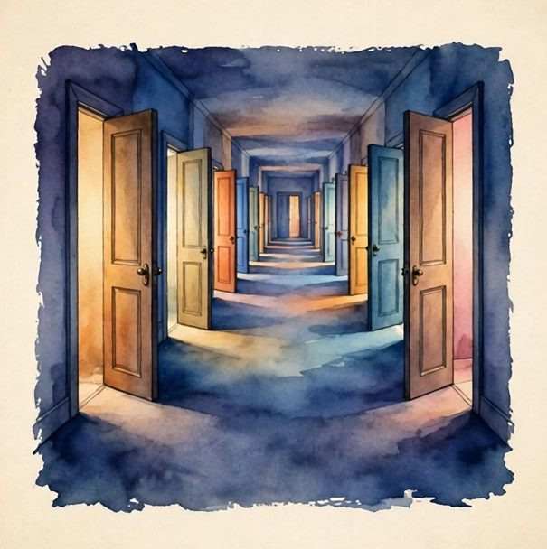
A long hall of many doors standing ajar, each spilling a different light.
The hall runs longer than the house seems able to hold, and every few steps along it a door stands ajar, spilling its own kind of light onto the boards: dawn gold from one, sea grey from the next, warm lamplight from a third. A visitor understands the arrangement before anyone explains it. Behind each door is another universe, and in each universe a version of the visitor is living the life that branched off at some fork — the road not taken, the letter not sent, the train missed by the width of a broken shoelace.
The house is honest about what it is, and says so at the threshold. These lives are imagined, not reported. Nobody has visited the universes behind the doors, and the keeper claims no knowledge she does not have. The doors are an exercise of attention, built the way a mirror is built: not to transport anyone, but to let a person see. What stands behind the glass is not a stranger. It is the same self in different weather — the same temperament, the same hungers, dressed in the clothes another road provided.
What the house asks of a visitor is plainness. Look without longing and without flinching. Do not grade the lives, and do not grade your own by them. The visit is measured by what it does to the looking — by the attention a person carries back through the door of the actual afternoon — and not by any claim about other worlds. The keeper keeps the hall swept, the hinges oiled, the glass clear. The rest, she says, is the visitor's own honest imagining, and it is enough. The corridor keeps its own counsel, and so, in the end, does the visitor.
2The House of Other Lives
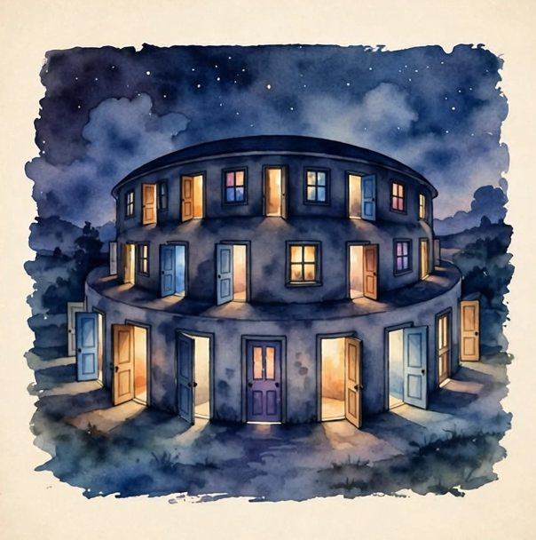
A round house of many doors under a night sky, its windows lit in different dusks.
The house is round, which surprises visitors until they have walked it. A round house has no head and no foot, no best side and no servants' side, and its doors open in every direction onto different roads. At night its windows are lit in different dusks — one still blue with evening, one already deep in a northern winter dark, one holding the greenish last light of a coast — because each life behind the walls keeps its own hour, and the house declines to correct any of them.
Inside, the rooms are plain. There is the long hall of doors, the register room where the keeper writes down which doors were visited and what was said at their thresholds, a small kitchen where she takes tea standing at the window, and the Crossroads Desk, where all correspondence for the house arrives. Nothing in the house is precious. Its value is that it exists at all: a fixed address for a country of imagined lives, a place where questions about the other roads can be left, and answered, or honestly left unanswered for a season.
The estate insists the house be kept in good repair, because imagination hosted in a neglected room tends to become excuse rather than exercise. The roof is sound. The glass is washed. The hinges are oiled before they can complain. Visitors arrive carrying one door in mind — usually the door of the road they did not take — and the house receives them the way it receives its mail: in order, without hurry, and with the kettle already on. A house that deals in other lives, the keeper says, should at least be competent at this one.
3A Hall of Open Doors
The doors of the hall stand open, and the openness is deliberate. A locked door would suggest treasure, or danger, or something that could be stolen and used — and nothing behind these doors can be. The lives in the rooms beyond are not supplies. They cannot be moved into, mined, or carried away. So the house leaves its doors the way a library leaves its reading room: open at the hours stated, to anyone who comes in a spirit of honest attention. They are also never barred, which matters more than it first appears to.
Open does not mean entered. Almost every visitor looks from the threshold, and the house counts that as the whole of the visit — the correct whole of it. A threshold is a disciplined place. From it, a life can be seen at the distance that keeps it whole: its weather, its furniture, its ordinary day, intact and unowned. To step through would be to start rearranging, and the house has no rearranging in its charter. The doors stand open so that looking can be easy, frequent, and calm. It is attention at the correct distance, practised standing up.
The keeper works at the openness the way gardeners work at a path. She oils the hinges weekly, because an open door that sticks teaches suspicion, and suspicion ruins more visits than locks ever prevented. She sweeps the thresholds. She replaces the wedges that hold the doors at their angle. Her aim is that curiosity should feel ordinary here — a daily thing, like taking a walk — rather than an emergency that must be justified. In this house, wondering about the other lives is not a symptom. It is a pastime with a desk.
4The Keeper of the Other Lives
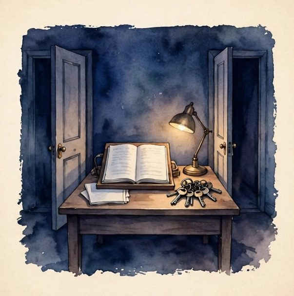
A keeper's desk set between two open doors, a register and a ring of keys on it.
The keeper's desk stands between two open doors, and she sits where she can see down the hall in both directions. On the desk: the register, bound in cloth the color of deep water; a lamp; a tray for letters; and a ring of plain keys, which exist for the doors that swell in damp weather and stick. She is the Keeper of the Other Lives, and the first thing to understand about her is the exact size of her office. She keeps the doors. She does not keep the lives.
Her habits are the house's habits. She records which door a visitor stood at and what they said on leaving, in a hand so plain that future keepers will have no trouble with it. She does not argue about which life is best; the register has no column for that. When a visitor insists that a universe behind some door is real, or provable, or owed to them, she corrects the record once, courteously, and returns to her tea. Nobody has been through the doors, she says. We look. That is the whole of our knowledge, and it suffices.
Her qualification for the post is temperament. She is incurious about gossip and curious about nearly everything else. She believes a life looked at plainly needs no defending — including, and especially, the visitor's own life, which most visitors arrive half expecting her to prosecute. She will not. She will offer the register, the corridor, a chair at the threshold of whichever door the visitor names, and the house's single rule, stated once and never repeated. Then she goes back to her letters, because the doors keep their own hours and so does she.
5The Crossroads Desk
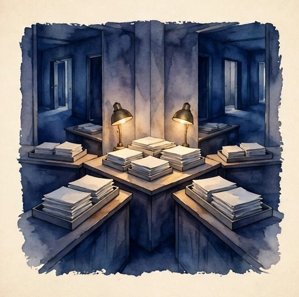
A desk where corridors cross, its lamps lit and its papers stacked in plain trays.
The Crossroads Desk stands where the corridors of the house cross, so that every route through the building passes it. It is a plain desk, wide enough for a register, a lamp at each end, and trays of correspondence sorted by hall rather than by urgency. All questions for the whole house arrive here: the roads not taken, the same self elsewhere, what crosses over, regret and gratitude. The desk reads everything in the order it arrives, and answers what it can, in the keeper's plain hand. The crossing, everyone agrees, is the right place for it.
The letters are of recognizable kinds. Some ask for a door to be described again, more slowly. Some report a split remembered at three in the morning and request the register's version of it. Some arrive angry at a road, as if the road had done something. The desk answers the descriptions fully, the memories carefully, and the anger hardly at all, having learned that anger at a road usually cools by the second letter into something more workable — often into the first honest description of the visitor's own road the desk has received.
The desk keeps one firm rule, and it is printed in no brochure because the keeper prefers it spoken: the desk describes; it does not direct. It will say what a road costs, in people and in years, as fairly as it knows how. It will say what the register shows about the self who travelled it. It will never say which road a visitor should have taken, or should take now. A crossroads desk that gave directions would soon be a toll booth, and the house intends to remain a house.
6Not Regret — Curiosity
The house distinguishes, at the door, between its two kinds of visitor. Regret arrives with its verdict already written and asks only for evidence. Curiosity arrives with a notebook and asks for the room as it is. Both are let in — the house refuses nobody — but the keeper can tell them apart by the sound they make in the corridor, and the register, over many years, has learned what each of them finds behind the doors. The keeper can also tell them apart by what they carry, and by how tightly they carry it through the door.
Regret uses the other lives as evidence against the actual one. Every bright room across the glass becomes an accusation; every quiet hour in the visitor's own life becomes a conviction. Curiosity uses the same rooms as context. It wants to know what the other life is like — its work, its weather, its costs — not what the visitor's life failed to be. The door is the same door. The visits have almost nothing in common, and the second kind leaves the visitor larger than it found them. One of them goes home heavier; the other goes home larger.
Curiosity is not the colder of the two. It is the more honest, and in the keeper's experience the warmer. Regret is a closed hand; it already knows. Curiosity is an open one; it can still be given things. The house therefore practices a gentle re-education at the desk, converting complaints into questions, one at a time, until the notebook fills with things genuinely worth knowing. Most visitors, the register shows, came the first time in regret and the second time in curiosity. The house counts that conversion among its few real products.
7Every Door Opens on a Life
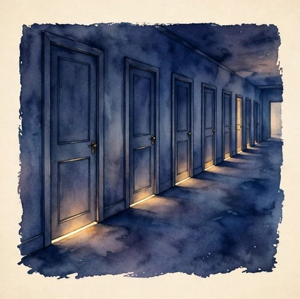
A corridor of doors in a row, a line of light under every one.
There is a line of light under every door in the corridor, and the keeper asks new visitors to notice it before they notice anything else. The light means someone is home. The lives behind the doors are not diagrams, outcomes, or morals with furniture; they are households in progress, with mornings, weather, errands, debts of kindness, and opinions about the rain. A visitor who grasps the light under the door has grasped the house's first courtesy: what you are about to look at is a life, whole from the inside.
Wholeness is the point that keeps surprising people. The one who stayed is not a sketch of caution; he has a full calendar and strong views about pruning. The one who left early is not a sketch of daring; she has an address book, a landlord, a way of taking tea. No door in the hall opens on a summary. Each opens on the same density of days the visitor's own life has — which is why the register refuses single adjectives for any of them. A summary would be easier to file, and the house declines to file one.
This is also why the house insists on ordinary detail whenever a life is described at the desk. The kettle. The commute. The neighbor. The joke told every year at the same table. A life reduced to its turning point is a poster, and posters lie even when their facts are true. The keeper will describe a whole Tuesday behind any door before she will describe the moment the road split to reach it. The Tuesday, she maintains, is what the split was actually for. The split, after all, is quickly told; the Tuesday is the life itself.
8The Self Is Not a Single Road
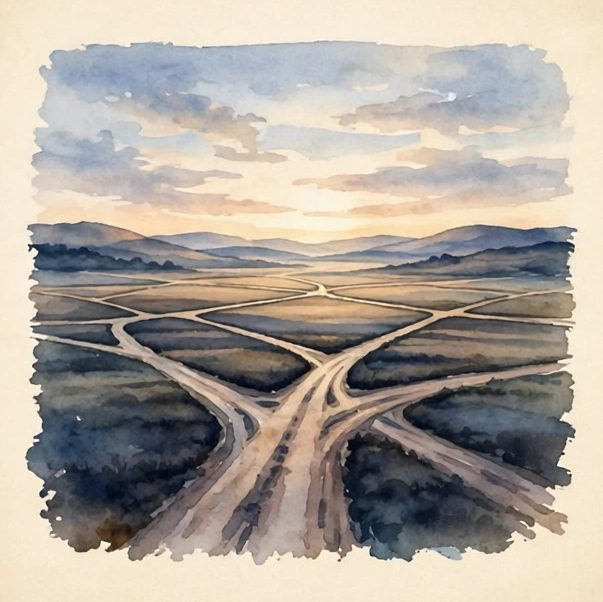
One road dividing into many roads across a plain at dawn.
At dawn the plain below the house shows the emblem of the whole building: one road coming out of the village, dividing at the river, dividing again at the ridge, and again beyond it, until the country is webbed with routes going everywhere a life can go. Each road carries traffic. Each was the whole journey for somebody. The plate hangs near the entrance because it corrects, without a word of argument, the first misunderstanding nearly every visitor brings through the door. It is the first thing the keeper points out, before any door is named.
The misunderstanding is that a self is a quantity that gets used up by choosing — that the person who took the left road is somehow a fraction, the remainder after the other lives took their shares. The plain says otherwise. What divides at the forks is circumstance: city, work, company, weather. The traveler does not divide. On every road the whole person walks — the same temperament entire, the same hungers, the same laugh — meeting a different arrangement of the world with the complete equipment of themselves. Nothing is spent by the mere fact of the fork in the road.
So the register never speaks of the visitor as one shard among many. Each life in the house is entire, including the one being lived on this side of the glass. The others are not the visitor's missing pieces, and retrieving them is not the purpose of the visit, because nothing is missing that a visit could retrieve. What the roads share is the walker. What they do not share is everything else, and the house exists to look at both facts at once, steadily, until they stop seeming to contradict each other.
9Looked At, Not Lived
Every door in the hall has a glass in it, polished to a shine the keeper maintains personally, and the glass is both the house's central courtesy and its central limit. Through it a visitor may look as long as they like: at the room, the day, the life in progress. The glass does not open. The door does not admit. The arrangement is not a tease; it is the entire ethics of the house expressed in joinery. These lives may be looked at. They may not be lived. Look, it says; that is the invitation, and also the whole of it.
The limit keeps the exercise honest in both directions. A life regarded from the threshold keeps its dignity; it is not raw material for the visitor's improvement, and its occupant is not a draft of the visitor to be corrected by hindsight. And the visitor keeps their dignity too: released from the exhausting fantasy that the right life could still be moved into, like a better house on the same street, if only the door could be forced. The glass saves everyone a great deal of fiction. Dignity, in the house's experience, is largely a matter of distances kept.
Some visitors press close to the glass for an hour, saying nothing, and leave quieter than they came. The keeper counts those among the complete visits. Nothing was taken, nothing was promised, and something was seen clearly enough to change the temperature of the actual evening. That is the transaction the house is built for. The glass, she says, is not what separates the visitor from the other lives. It is what makes looking at them possible without lying about what looking is. The polish on the glass is for their benefit, not for the rooms'.
10No Universe Is the True One
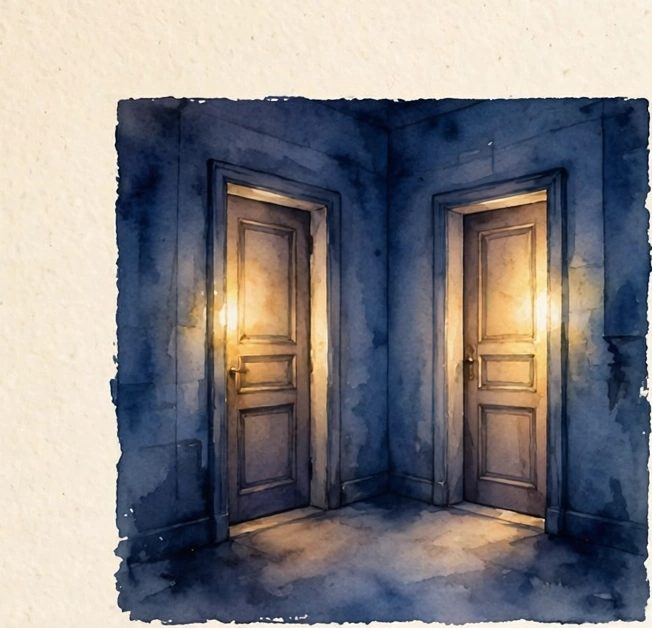
Two doors facing each other across a hall, both closed, both lit from within.
Two of the doors in the hall face each other directly across the boards, both shut, both lit from within, and visitors who find the pair almost always ask the same question: which of these is the true one — the life that should have happened, the real text of which the other is the copy. The keeper answers from long practice, and her answer dissolves the question rather than settling it, which she considers the more respectful of the two operations. The keeper has answered it so often that she no longer bothers to rise from her chair.
Each life, she says, is true from inside itself. The stayed life has its own evidence, its own witnesses, its own weather; it does not experience itself as a footnote to the travelled one, and the travelled one returns the compliment in full. The actual life's only privilege is a plain fact, not a crown: it is the one being lived by the visitor, here, on this side of the glass. Privilege of occupancy is real. It confers duties. It does not confer metaphysical rank, and the house issues no certificates of trueness.
The facing doors teach one more piece of symmetry, and the keeper lets visitors discover it standing between them. From behind the other door, it is the visitor's life that is the counterfactual — wondered about, perhaps, at some other crossroads desk, by the self who took the train, stayed in the city, answered the letter. Humility, in this house, is not an exhortation. It is built into the architecture, so that a person absorbs it through the soles of their shoes while standing in the hall. The two lamps burn on either side of the hall, indifferent to precedence.
11The Keeper Keeps the Doors, Not the Lives
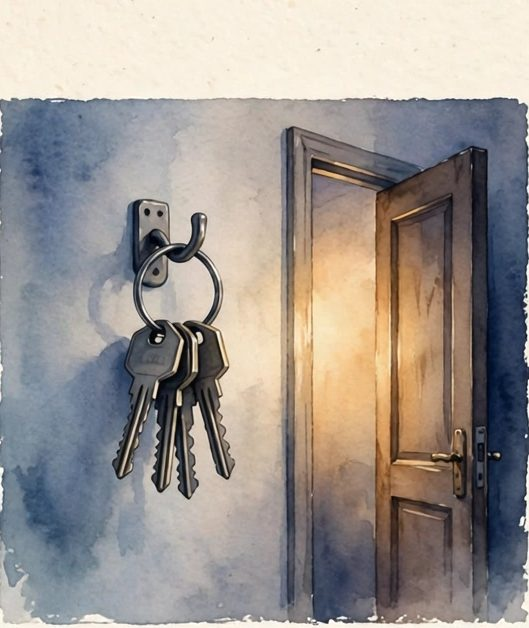
A ring of plain keys hanging on a hook beside an open door.
The ring of keys hangs on its hook beside the door, plain iron, unlabelled, and mostly unnecessary — which is precisely the statement it exists to make. The keys fit the doors that swell in wet weather and stick in their frames. They fit nothing else. No key on the ring opens a life, locks one, or files one away. The keeper's authority, such as it is, extends exactly as far as hinges, glass, and thresholds, and the house has taken care to give her no more. It has hung on the same hook since the house was built.
She keeps the possibility of looking. That is the whole inventory of her custody: that the doors stand true in their frames, that the glass stays clean enough to see a life by, that the corridor is swept so a visitor can stand at a threshold without shuffling in dust. She does not keep the lives themselves, because they are not hers to keep — not the house's property, not the visitor's property, not arrears to be collected by anyone. They proceed behind their doors, unwitnessed mostly, at their own pace.
The distinction protects everyone it touches. The lives stay unowned, and so stay honest objects of attention rather than assets. The visitors stay guests, and guests behave better than claimants. And the keeper stays a keeper — of doors, weatherstripping, and the register — rather than swelling into a judge of which lives deserve doors and which do not. Every life in the corridor has a door, the register notes, because the house was not built to grade them. It was built to keep them lookable. A swept threshold, the house maintains, is a form of respect for everyone.
12The First Rule of the House
The first rule of the house is carved nowhere and displayed on no wall. The keeper states it once, at the desk, to every new visitor, in the tone of someone giving the hour of the last train: look plainly — and use nothing you see here as a stick to beat the life you are actually living. That is the whole of it. Visitors who expected something more ceremonial sometimes wait for the rest, and she pours the tea, because there is no rest. There is only this, and everything it quietly governs.
Every other custom of the house descends from the rule. Count costs on both sides of the glass: that is the rule applied to arithmetic. Let gratitude cross back instead of envy: that is the rule applied to luggage. Close each door gently when you leave it: that is the rule applied to manners. The rule is not a decoration of kindness hung over the proceedings. It is the load-bearing condition that makes the looking safe to do at all — for the visitor, and for the lives, which did not volunteer to be evidence.
Visitors who break the rule are not punished; the house has no apparatus for punishment and would not use it. The keeper simply watches the visit curdle, the way milk curdles, observably and without drama, and at the right moment she suggests tea, and a chair, and — when the visitor is ready — the door of the actual afternoon, which stands open on its own hinge and has been waiting with its own light all along. The rule, she finds, is easiest to keep from a chair, with tea, in the present tense.
13Where the Roads Split
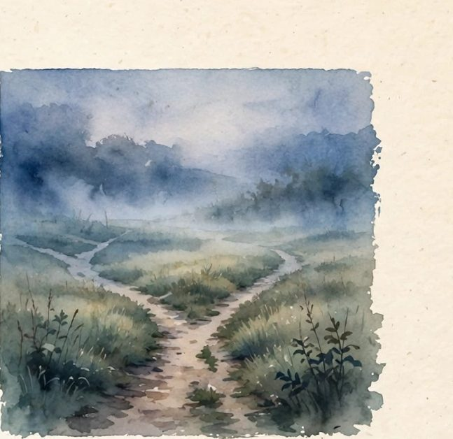
A footpath forking in a meadow, morning mist lying on both branches.
The second hall begins at a fork in a meadow, and the plate above its door shows the essential fact about the place: morning mist lies on both branches alike. At the moment of a split, neither road displays its weather. The path that leads to the wide life and the path that leads to the narrow one go out of the meadow in the same grey softness, and anyone who claims to have seen clearly at the fork is remembering with equipment they did not have at the time.
A split, in the register's definition, is any point after which a life differs from its neighbor on the shelf: a yes, a no, a missed train, a letter answered or unanswered, a fever in the wrong week, a stranger's remark that landed. The hall sorts them without ranking them — chosen, chanced, and unnoticed — and insists the sorting be done honestly, because most splits arrive wearing the wrong category. Chosen ones were often chance in a coat. Chanced ones were often choices made by tired people at dusk.
The method of this hall is to stand at the fork and name what actually parted there: not the fantasy of the parting, gilded or blackened by the years, but the fact of it, at its real size. Visitors who do this in the register's company are reliably surprised twice — first at how small most splits were, a sentence, a delay, a whim; and then at how large they grew, faithfully watered by everything that came after. The meadow keeps both truths in one view. That is why the hall begins here.
14The Year Everything Turned
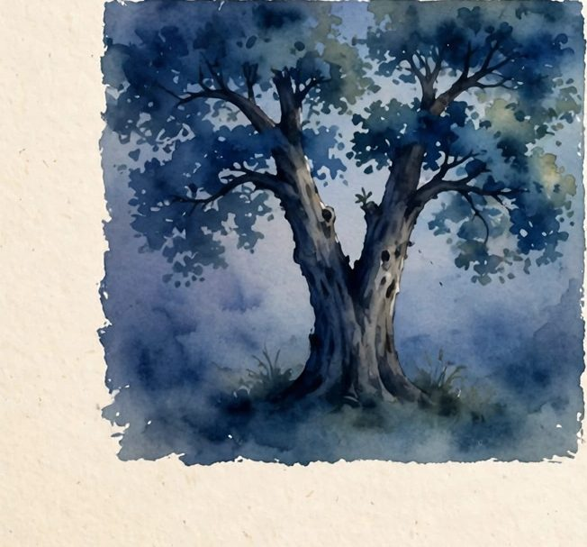
An old tree whose trunk splits upward into two great crowns.
An old tree stands in the register's front garden with one trunk and two great crowns, both fed by the same roots, both throwing their own shade, neither able to claim it is the tree. It is the house's emblem for the year everything turned — the year nearly every visitor can name in their own life, or believes they can: the year of the move, the meeting, the loss, the application sent in a fit of courage, the door knocked on because there was nothing else left to knock on.
The house treats the belief respectfully and the year precisely. When the register reconstructs such a year, the turn is almost never a single hinge. Much had been preparing underground: dissatisfactions ripening like roots, skills quietly grown, a patience quietly exhausted. The year everything turned is usually the year the underground work broke the surface. This does not diminish the year. It returns it to the visitor at its true size — a season in a long cultivation, not a bolt from a clear sky. The register merely adds the roots to the account, where they belong.
The two crowns, meanwhile, do not compete for the title of real tree, and the keeper corrects any visitor who tries to award it. Everything below the fork — the childhood, the town, the first hungers, the whole early weather of a life — is held in common by both lives, entire and undivided. The lives behind the doors are not strangers who diverged from nothing. They are the same tree above one fork. Remembering that is what keeps the looking tender, and the register plants its emblem where no visitor can miss it.
15A Letter Answered, a Letter Not
The register's most requested file concerns two letters. One was answered on the day it arrived, in a hand still warm from the reading of it. The other was set aside for a quieter hour, and the quieter hour, by the ordinary arithmetic of postponement, arrived after the answer had stopped mattering. Whole lives hang from the pair of them: the answered letter begins a marriage, a partnership, an emigration, a feud. The unanswered one leaves a door in a corridor that darkens slowly and is finally used for storing coats.
The keeper notes the asymmetry with which memory treats the two. We remember the letters we sent; we can recite their phrases decades later, and do. The house remembers the ones we did not send, because it keeps the doors, and behind the unsent letters stand entire unlived lives in good order, their lamps lit, waiting with the patience of things that do not know they are waiting. A visitor who asks after this file is usually looking for the exact day a road split. Often it was a Tuesday, at a desk, in ten unwritten minutes.
Neither life, the register insists, is the cautionary tale visitors expect when they request the file. The life that answered contains its dinners, winters, jokes, and griefs, and so does the life that let the letter lie. The split is real; the moral is not supplied, because the house does not keep morals in stock. What it keeps is the pair of letters, side by side on the desk — one opened flat, one still sealed — and the standing invitation to look at both before judging either. One envelope is empty now; the other is full of weather.
The Crossroads Desk
One desk receives all correspondence for this house — questions, corrections, and word of any other life a visitor has been looking at: the door they wonder about, the split they keep returning to. It is read in the order it arrives, and entered in the register of other lives.
16The Train Taken and the Train Missed
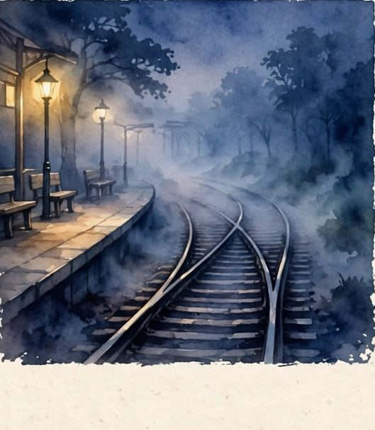
A railway platform with two tracks diverging into fog.
The platform at the end of the second hall is the classic split, the one every visitor recognizes from their own biography: one train taken in a hurry, coat half buttoned, bag banging the knees — and one train missed by four minutes and a broken shoelace, watched from the platform edge as its lights diminished. Behind one door of the hall stands the life that boarded. Behind the facing door, the life that walked home in the rain and made tea. The register keeps both tickets, though one of them was never used for travel.
The taken life is knowable at the desk only in outline; the missed life is the one visitors write in asking about, as if the register kept it under special guard. It does not. The desk describes both with the same plainness and at the same length: each arrives somewhere; each acquires its weather, its work, its strangers who become necessary; each contains evenings its occupant would not trade and mornings they would not repeat. The symmetry is deliberate. Favoritism in description is the first step toward the verdict the house refuses to issue.
The fog in the plate is the honest part of it, and the keeper draws attention to it whenever the file is requested. Nobody on that platform saw more than a few yards down either track. The choice, such as it was, was made in fog, with fog's information, by a person whose whole equipment was a ticket, a shoelace, and the hour of the day. The register declines to grade decisions made in fog by the clear view available fifty years later. It considers the grading a category error, and the fog a form of mercy.
17One City Chosen, Another Refused
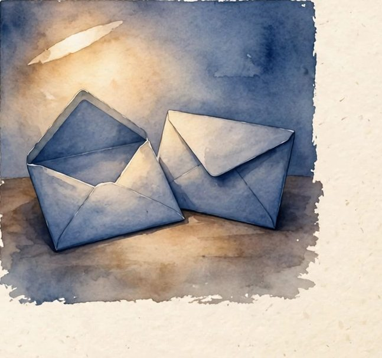
Two envelopes on a desk, one opened, one still sealed.
Two envelopes rest on the desk in this section of the register: one slit open, read, and acted on; one still sealed after all these years. They held, between them, two offers of work, two invitations, two cities — one of which the visitor chose and furnished with a life, and one of which was refused, and has therefore remained in the visitor's keeping ever since, unspent and perfect, the way sealed things stay perfect: by never being tested against a winter. Only one of the two was ever allowed to become ordinary.
A chosen city becomes specific within a month. It acquires rents, queues, a bakery, a hill the knees learn, weather that must be dressed for rather than imagined. A refused city keeps the climate of the brochure forever. The house deflates this asymmetry gently but firmly whenever the file is opened: the unchosen city also had winters, also had landlords, also contained streets where nothing happened and people who would have bored or disappointed the visitor on schedule. Both envelopes, opened in the register's imagination, contain weather. Specificity is the chosen city's burden, and also its dignity.
Visitors ask the desk to compare the two lives, and the desk declines to begin there. It compares the cities first — street by street, cost by cost, mercy by mercy — until the comparison is fair enough to stand on. Only then does it speak of lives. Often, the visitor discovers in the course of the streets that the split was never between a good city and a bad one. It was between two weathers the same self would have worn differently, and both weathers, examined at walking height, have their coats and their clear days.
18The Door That Was Almost Opened
Some splits are not crossings but near-crossings, and the second hall keeps a whole shelf for them: the application written out fairly and never sent, the conversation rehearsed in three versions and never held, the ticket priced twice and never bought. The door of these splits never swung. It also never quite closed. It stands in the corridor of a life for years, resting on its latch, letting a thin line of weather move under it in both directions, and the register counts more of these than of all the grand refusals combined.
The almost-opened door has its own physics, which the keeper describes without drama. What is behind it is not a paradise withheld or a punishment escaped; it is a life, ordinary in the ways lives are ordinary, with its own repairs pending and its own jokes in rotation. Yet an unopened door gathers significance the way an unopened letter does — interest compounding on an untested principal — until the visitor half believes the room behind it must contain either everything or nothing at all. It gathers quiet, too, the way an unswept corner gathers dust.
The house's prescription for the almost door is simply to look at it, at last, through the glass, at walking height and in full detail: the work, the street, the Tuesday afternoons of the life behind it. The visitor who finally does this, often decades late, reports a characteristic relief. What was worshipped or dreaded for half a lifetime turns out to be a room with furniture in it. The door can then rest on its latch without pulling at the corridor's weather, and the life on this side walks past it at an easier pace.
19Chance Has a Hand in It
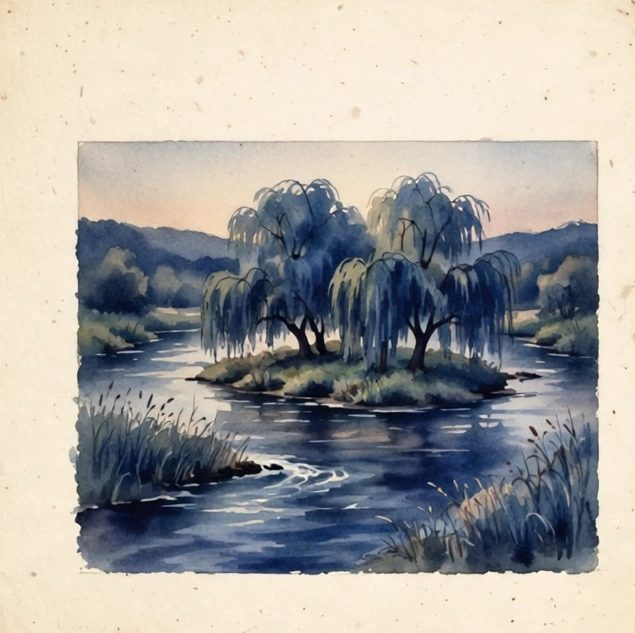
A river splitting around an island of willows.
The river in the plate does not choose the island. The island is simply there — willows, a shingle bank, a heron's opinion of both — and the water divides around it because dividing is what water does when the land stands in its way. The house keeps the river at the center of this hall as a standing correction: a great many splits have no author at all. Nobody decided them. Nobody can be billed for them. They are geography, happening to a life the way weather happens to a roof.
Chance is the co-writer no memoir credits properly. The seat assigned on a train, beside the person who mentioned the town. The rain that moved the picnic indoors, into the room where the introduction happened. The delayed connection, the wrong turning taken in good humor, the book left on a bench. The register keeps a column for chanced splits, in a hand as careful as any other, and it is by a wide margin the longest column in the book — longer than chosen and unnoticed combined in most lives the desk has examined.
Admitting chance is not surrender, the keeper insists; it is accuracy, and accuracy is a form of rest. A life understood to be partly chanced can be held more lightly and judged more fairly — one's own most of all, but everyone's, which is why the register's readers tend to leave this hall gentler toward strangers. Below the island, in any case, the river rejoins itself without ceremony, and so do the lives: whatever the water went around, the same river continues, and the same self, having taken both banks' worth of weather, walks on in one piece.
20The Small Cause With the Long Shadow
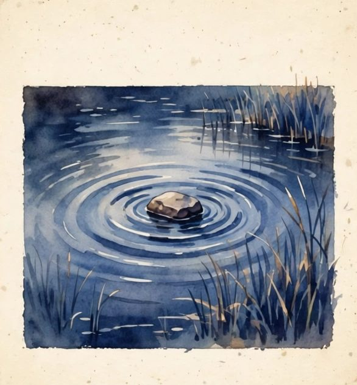
A small stone dropped in a still pond, rings widening toward the reeds.
At the end of the second hall the register keeps a pond, still as glass at the hour when the light goes level, and in the plate above the door a stone no bigger than a plum is falling toward it. The stone is the smallest object in the hall's whole collection, and the keeper points it out to visitors who have been sighing over the size of the machinery that rearranged their lives. Most of the machinery, she says, was this size. The rings from it are still traveling.
The catalogue of small causes is the register's most thumbed section: a book lent and never returned, a sentence overheard through a door, a delayed bus, a kindness done casually and remembered at exactly the right hour twenty years on. Their shadows are long not because the causes were secretly large, but because a life is a long surface for a shadow to fall across. Given enough years, a plum-sized stone reaches reeds on the far side of anything. The desk keeps the catalogue in alphabetical order, which nobody expected and everybody uses.
The house draws the moral of the pond with care, having watched visitors draw the wrong one. Small causes do not argue for anxiety; no garrison can be kept around a pond, and no one can audit every stone the world drops. They argue for attentiveness of a different kind: since casual words travel farther than intended ones, a person who knows the pond's physics walks more gently near other people's water. The rings from our smallest kindnesses are also still traveling. The register finds this the more useful of the two facts, and ends the hall on it.
21Splits You Never Noticed
For every fork a visitor can name, the register assumes a dozen walked through unknowing: the day the two futures parted quietly, at no marked crossroads, in the middle of an unremarkable afternoon. The field in the plate is crossed by faint lines in several directions, none of them signposted, because that is what the splits you never noticed actually look like — not a gate, not a storm, just grass bending in a slightly different direction under ordinary feet. Most of them parted in good weather, which is partly why they went unnoticed at the time.
The evidence for them arrives late and sideways. An old friend, met after thirty years, mentions a plan in which the visitor was once central and from which they were gently, never noticeably, released. A photograph shows a road half taken. A name in a newspaper turns out to belong to a life that nearly included the visitor in its furniture. The register files these discoveries without alarm. An unnoticed split is not a missed duty, and the house will not permit it to be prosecuted as one in its corridor.
There is arithmetic comfort here, and the keeper administers it plainly. The unnoticed splits of any single life are beyond counting — hundreds, probably thousands, parting at every crowd, every timetable, every door held or not held. No visitor could have managed them all; therefore no visitor can be indicted for managing none of them. The examined life, in this house, is not a court of appeal sitting on the unexamined hours. It is a walk, taken at walking pace, with the attention that was available at the time, and the register closes the file there.
22The Road Split Before You Were Born
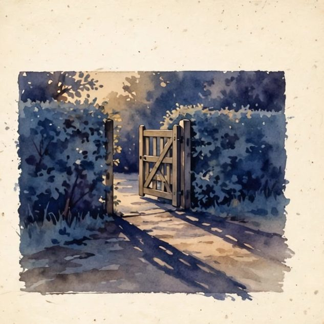
A gate in a hedge standing half open, a long shadow across the path.
The oldest splits in the register predate the traveler altogether. The town the grandparents chose, and the one they left in a hurry. The language kept, and the one allowed to lapse at the kitchen table. The trade followed, the trade fled, the marriage made across the valley instead of across the sea. By the time any visitor arrives at the Crossroads Desk, a gate has already been standing half open for them for a century, and much of their early road was laid out by hands they never met.
These inherited splits shape the beginning of a life so thoroughly that they stop looking like splits at all; they feel like landscape, like the given geology of the world. The house asks only that they be seen accurately — as forks once stood at by other selves, in other weather, with other lives genuinely standing behind each branch. The grandmother who stayed might have gone. The grandfather who went might have stayed. The visitor's road descends from both of those unchosen lives as surely as from the chosen one.
No blame travels backward in this hall; the register is firm about it. The ancestors at their crossroads stood in fog of their own, with less information than the visitor now uses to judge them, and they chose with the equipment of their hour. Their forks are recorded in the same level hand as everyone's. And the visitor's road, however it began — half opened for them by the dead, long before consent was possible — is still the road being walked now, on the visitor's own feet, in the visitor's own weather.
23Not Every Split Was a Choice
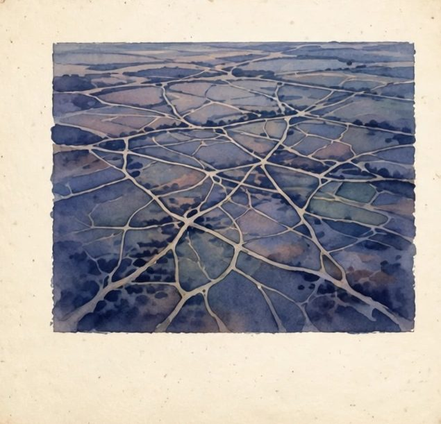
A high view of a plain webbed with many faint paths.
From the hill above the house, on the clear days, the plain shows itself webbed with paths so densely that the idea of any single life as an authored route — planned, executed, owned — quietly becomes untenable. Paths cross, merge, vanish into marsh, reappear. Some were cut by feet. Some were cut by weather. The register keeps the view in mind whenever a visitor arrives carrying a prosecution of themselves, and it sends them up the hill before it opens their file. It is the register's preferred treatment for self-prosecution, and it rarely fails entirely.
A portion of every life's splits were imposed from outside any choosing: a factory closing in a town built around it, a border moving overnight across a family's fields, an illness in a household that reorganized a decade around a sickroom, a harvest failing three years running. The register marks these in a different ink, because their bookkeeping differs in kind. No one failed to choose. The country changed around the road, and the road went where the country allowed, and the lives behind those splits are not the lives anyone declined.
Seeing this clearly is one of the house's main mercies, and the keeper administers it without ceremony. Visitors stop prosecuting themselves for weather. The other life behind an imposed split is not a declined invitation; it is a life the world declined, which is a different object entirely, and grief for it — kept small and honest, like a candle rather than a furnace — is permitted in this hall without shame. The web of paths goes on glinting below the hill. Most of it, the register notes, was never anyone's fault at all.
24The Map of Splits Is Not the Country
Above the Crossroads Desk hangs the house's chart of one composite life: branching lines in pencil, some inked over, some half erased where the record gave out, annotations in the keeper's plain hand where a split could be dated. It is handsome. It is useful. New visitors fall in love with it on sight, and the keeper lets them, because she remembers falling in love with it herself. Then, gently, she explains the house's standing warning, which this second hall exists to deliver: the map of splits is not the country.
A map can be finished, and that is its seduction. A visitor can stand before the chart with everything accounted for — every fork dated, every road named — and feel the deep, false satisfaction of a completed account. A life cannot be finished in that way, because a life is not made of forks. The chart shows where roads parted. It says nothing about the smell of the rain on either of them, the price of bread, who laughed at the table, what the Tuesdays were like at walking height.
So the house pairs every map with a walk. Before any chart may be consulted a second time, the visitor must describe one ordinary day on the other road — hour by hour, meal by meal, errand by errand — in the register's patient company. The exercise reliably restores the proportions. The map shrinks back to its proper size: a tool for finding doors, an index, a convenience. The country resumes its proper size too, which is the size of a life, and neither the keeper nor the register will pretend otherwise on any chart they keep.
25The Lives of Other Choices
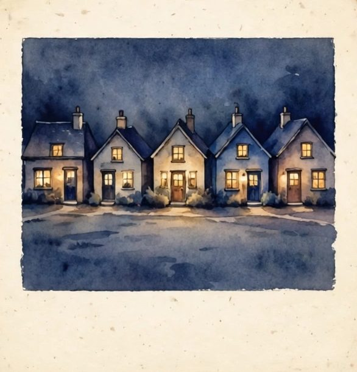
A row of small houses, each lit as if a different life were lived inside.
The third hall opens on a row of small houses at dusk, every one lit, every one plainly inhabited — smoke from this chimney, a bicycle against that wall, washing still out on a third — and behind each door stands a life that began at a choice. The splits of this hall were not weather and not chance, or not mainly. They were decisions, taken by the same self who is now visiting, at hours the register can often date to the day. The houses are lit because choices, once made, become addresses.
The method of the hall is seriousness about specifics. Each life here is to be taken as a whole household, not as a single adjective with a roof on it. The one who stayed is not the cautious life; it has a street, a season, a way of taking tea, and a fifty-year opinion about the council. The one who left early is not the brave life; it has rent, weather, and a landlord with a cough. The keeper requires detail before discussion, the way the desk in the earlier hall required a walk before a map.
A notice is posted at the hall's entrance, and the keeper asks that it be read twice. A chosen road reflects the chooser at one hour of one day — tired or rested, frightened or flush, well advised or badly. It does not reflect the whole person, and it convicts nobody. The lives in this hall are evidence about hours, the register says, gathered under particular weather. They were never intended as verdicts about souls, and the house will not have them used as such in its corridor, however eloquently a visitor prosecutes.
26The One Who Stayed
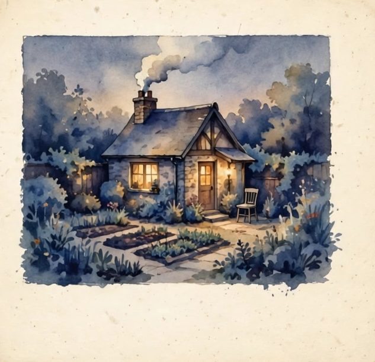
A cottage stayed in and kept: smoke rising, its garden tended, one chair on the porch.
The first house in the row belongs to the one who stayed. Smoke rises from its chimney in a straight, unbothered line. The garden is tended to the fence. One chair stands on the porch, worn over forty years into the shape of a particular sitter, and in the universe behind this door the offer — the job in the far city, the partnership, the ship — was declined, the valley was kept, and the life was built exactly here, on the ground the visitor grew up walking. Nothing about the cottage apologizes for itself, which visitors notice first.
What staying built is real and the register inventories it without embarrassment: depth in the same people instead of breadth among new ones; the long knowledge of one place's weather; a name that means something at the bakery and the council both; the status of witness, the one who remembers everyone's whole story because he was present for all of it. What it cost is also entered, in the same hand: the road's news arriving secondhand, some wonders remaining rumors all his life, a few hungers never once addressed because the valley had no shop that stocked them.
The house refuses the sentimental version in both directions, which visitors find briefly disappointing and then restful. Staying was not cowardice wearing an apron, and it was not wisdom wearing one either. It was a road, with its own repairs and its own views, and the one who stayed — same self, same hungers, same laugh in the same throat — made of it what the temperament makes anywhere it is set down: a life, uneven, specific, and entirely real to the person living it. The chair on his porch, the register adds, fits exactly one person.
27The One Who Left Early
Behind the second door of the row, the leaving happened at nineteen instead of never. The plate shows the road at first light, the gate still swinging gently behind the empty path, the village asleep in the particular blue of an hour when only the leaver and the baker are awake. In this universe the bag was packed the night before, the note was left under the clock, and by the time the valley had finished its breakfast the road had a new traveler on it, walking fast to keep warm.
What leaving early built is entered fully in the register: a self assembled in strange towns, fluent in beginning again; friendships struck like matches in many weathers, some of them still burning at great distances; a knowledge of one's own company that the stayed life acquires later or never. What it cost is entered in the same hand: the long middle of other people's stories, missed in person — marriages, illnesses, jokes, declines — and never fully recoverable afterward from letters, however faithful. Some chapters of a valley's book can only be read by being there.
The keeper notes one more entry, because it recurs in this file with unusual regularity. The one who left early envies the stayed life specific, nameable things: the porch chair, the known graves, the unearned belonging of a person who never had to explain himself at a bakery. And the envy runs symmetrically, door to door, like weather shared between two valleys — ordinary, survivable, no more a verdict on either road than rain is a verdict on a roof. Neither life, the register concludes, kept the whole of the good. Each kept a whole life, which is a different and sufficient thing.
28The One Who Chose the Other Work
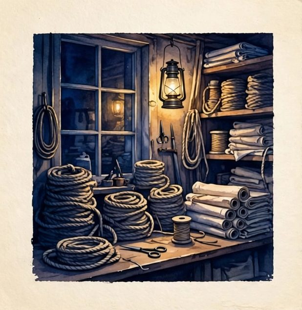
A sailmaker's workshop window, coils of rope and folded canvas within.
Behind this door the hands went to other work. The window of the sailmaker's workshop shows the tools laid out for morning: coils of rope in their sizes, canvas folded in bolts, needles like small anchors, a palm of leather worn smooth. In this universe the apprenticeship offered in the harbor town was accepted instead of the clerkship, and the life that followed smelled of tar and salt rather than ink — a difference that sounds decorative in the telling and is structural at the level of the day. The window faces the harbor, and the harbor sets the hours.
Work shapes a life from the inside, more thoroughly than any address does. It decides what the hands know, what the eyes notice first in a room, what tiredness feels like at dusk, and which strangers become necessary. The sailmaking self has weather in his judgment and patience in his fingers; he reads strain the way the clerking self reads a balance sheet. The register insists, against the visitor's first instinct, that these are the same person at different benches — that temperament took the local shape of whichever trade fed it.
Visitors ask at this door, sooner or later, whether the other work would have made them happier, and the desk corrects the question to a fair one before answering it: what would the days have felt like. Days are the currency in which lives are actually paid. Built up from detail — the winter mornings, the mastery arriving in the hands, the hernia of pride at a sail that draws well — the register's answer is usually unspectacular and therefore trusted: a different tiredness, a different pride, and the same person reporting both at the desk, in the same words.
29The One Who Married Differently
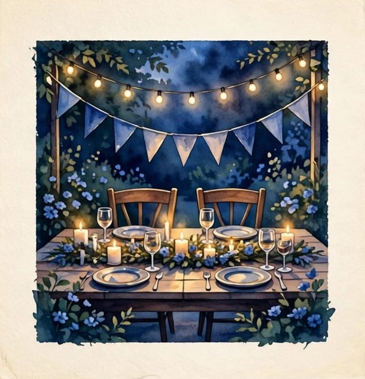
A garden table set for a celebration, two chairs at its head, bunting above.
The table in the plate is set for a celebration: cloth, glasses, bunting strung above, and two chairs at its head that plainly belong to the hosts. In the universe behind this door a different yes was said — at a different altar, in a different year, to a different person's whole rearrangement of the future — and a household grew from it as households do, by accretion: a street, a repertoire of jokes, a way of hanging curtains, a cast of in-laws gradually converted from weather into family. The bunting, the register notes, was homemade, and slightly crooked.
The house handles this door with its plainest courtesy, and asks visitors to match it. The other marriage is not a rumor about real people, and it is not an indictment of the actual one; it is an imagined household, entitled to the same wholeness the house grants every life in the corridor. It has its own quarrels and reconciliations, its own good decades and threadbare ones. It has children who exist behind this door and not behind the visitor's — and the register, unmoved, counts the reverse at the facing door, where the visitor's children are the ones who were never born.
What surprises visitors most, standing at this glass, is the familiarity. The same self sits at the other table: laughing the same laugh at a different person's stories, keeping the same hungers in a different kitchen, deploying the same flaws against a different set of temptations. The doctrine of the house holds exactly here, where it is hardest: temperament travels; the marriage differs; the marrier is recognizable everywhere. The register records this as comfort, far more often than as grief — the comfort of discovering that the self was never a hostage to a single afternoon.
30The One Who Never Moved Away
Four panes show the same cottage window in four seasons — snow on the sill, blossom on the sill, green weight against the glass, leaves at the foot of it — and beyond all four, one hill, unchanged. In the universe behind this door the move away never happened at all: not postponed, not failed, simply never undertaken. The first address became the only address, and the hill beyond the glass outlasted every plan that was ever made in the room to leave it. The four panes are shown side by side in the register, like a family.
What never moving built is entered in full: a knowledge of one place so dense it amounts to a second memory — which field floods, whose grandfather planted which hedge; friendships fifty years deep, with interest compounding; the standing of a witness to a place's whole modern history, consulted like an archive. What it cost is also entered, in the level hand: some selves are only met on roads, and a few hungers were never fed at all, not refused exactly, just never once presented with their food. The register records them without drama, as it records everything.
The desk has noticed a pattern at this door, and files it among the house's oldest findings. Visitors from cities read the door with more longing than visitors from villages do — and at the door of the one who left early, the longing runs precisely the other way. The other life most wondered at, the keeper concludes, is usually the one standing opposite the road taken, and the wonder says more about the hour of wondering — its weather, its tiredness, its specific hunger that evening — than it says about either road.
The Crossroads Desk
One desk receives all correspondence for this house — questions, corrections, and word of any other life a visitor has been looking at: the door they wonder about, the split they keep returning to. It is read in the order it arrives, and entered in the register of other lives.
31The One Who Risked It All
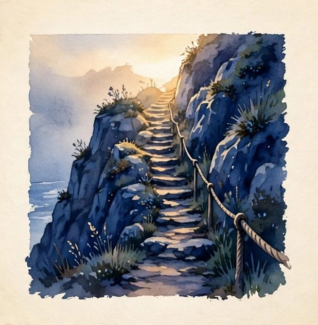
A cliff path with a rope handrail, climbing steeply toward light.
The path in the plate climbs like a staircase cut into the cliff, a rope handrail sagging between its posts, the light at the top doing the persuading. Behind this door stands the life in which everything was wagered: the savings, the reputation, the safe decade, all of it carried up to one throw — the business founded on the borrowed money, the resignation handed in before the offer existed, the whole stake placed on the work nobody else believed could pay. It is the only door in the hall that visitors approach more slowly than the others.
The register describes this life in two columns, because visitors always ask for the outcome first and the house has learned to make them wait for it. In one column, the throw won: the life is wide, drafty, a little stunned by its own success, famous at one remove. In the other, the throw lost: the life is narrower, shrewder, rebuilt at a lower altitude, not without jokes of its own and not without a particular clear-eyed tenderness the winning column lacks. The door itself promises neither column. It shows what the wagering did to the person's weather, win or lose.
One entry in this file surprises nearly every visitor who reads it. The risked-all self, in either column, reports the wager itself as the least regretted element of the whole life — the one stretch where the days were entirely meant. What that self envies in the visitor is not safety, and not money. It is the unspent years: the plain capital of time the visitor still holds, which behind this door was converted, at a steep rate, into intensity. The house sets the two envies at the table together, facing each other, and cancels neither.
32The One Who Played Safe
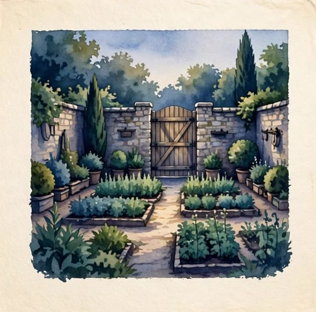
A walled garden with its gate shut, safe green order inside.
The garden in the plate is walled, gated, and shut, and inside it everything stands in green order: espaliers flat against the warm brick, beds edged like handwriting, a bench placed exactly where the afternoon sun was calculated to land. Behind this door is the life in which every wager was declined, every edge kept trimmed, every door of opportunity examined carefully and closed with thanks. Visitors arrive at this glass, often, already smiling the smile they intend to wear. The keeper asks them to put it away. The bench, it must be said, looks extremely comfortable.
The house refuses the easy mockery of this door, on the evidence. Safety built things here that risk never builds anywhere: the unbroken decade; the savings that stood ready, twice, for real emergencies and met them without drama; children raised in a house where the roof's soundness was never a topic; a garden that took thirty years to look inevitable. Order is a genuine achievement, compounded daily, and a failure of nerve is not what produced this one. The register enters the beauty plainly, because it is plainly there. Beauty, the house insists, is evidence, and it is entered as such.
The cost is entered in the same hand, because the house deals in whole lives. Some doors inside this garden were never built at all, and its keeper — the same self, with the same hungers — is recorded standing at the wall on certain evenings, listening to weather from other roads, not unhappily, but listening. The house's verdict on the played-safe life is its usual one, which disappoints partisans of both columns: a life, with its own weather — neither the warning nor the model it is commonly made into at other people's desks.
33The One Who Said Yes That Day
One particular day is named in this section of the register more often than any other in the year. On that day the offer arrived — the invitation, the stranger's proposal, the question asked almost casually at a doorway — and in the universe behind this door, the answer given was yes. The plate shows the door of that day opening wider by an inch, the band of light broadening across the threshold boards: not a flood, not a revelation. An inch of yes, widening. The day has a date in the register, and the date is underlined once.
The yes life unfolds from that inch in the register's careful detail. The yes led somewhere unplanned: a trade learned late and loved, a country seen from inside its kitchens, a person met who rearranged the furniture of the next fifty years. But the desk is strict about proportions. No life is made of its turning day alone, and the file gives the yes's ordinary Tuesdays their full allotment of pages — the errands, the weather, the dull kindnesses — because those Tuesdays, in the end, are most of what the yes actually purchased.
Visitors romanticize this door more than any other in the hall, and the keeper lets them, briefly, before pointing across the corridor. A yes is a split like any other: it closed, forever, the life in which the answer was no. Behind that facing door — the register is impartial, and the symmetry is the lesson — someone is at this moment standing in a corridor of their own, wondering about the yes, and envying the inch of light. Both visits are recorded. Both visitors are the same person. The house keeps the doors facing each other for a reason.
34The One Who Said No and Meant It
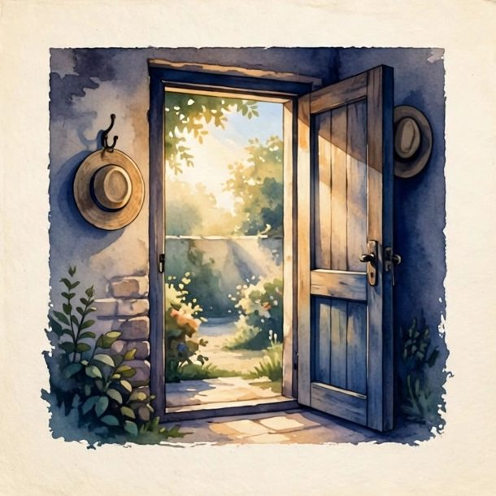
An open door with morning pouring through it, a hat on the hook beside it.
Morning pours through the door in this plate as if the day were a liquid kept under pressure, and a hat hangs on the hook beside it — left there, plainly, by someone who decided to stay. Behind this door stands the life built on a refusal that was meant: not fear wearing refusal's coat, not fatigue or politeness, but a no with its whole weight behind it, said once, in a level voice, by a person who had counted the cost of saying it and paid. The hat, visitors eventually understand, is the point of the plate.
What a meant no builds, the register records, is first of all a shape. The no to the partnership, the relocation, the marriage, the merger of a small life into a large convenient machine — the refusal cleared a field. And fields that are cleared get planted: the work taken instead grew there, the person met in the cleared years arrived there, the self-respect that compounds quietly, like interest in an old account, accrued exactly there. The life behind this door is not the remainder after a subtraction. It is a construction, and the no was its first load-bearing wall.
The house keeps this door especially well oiled and bright, because visitors neglect it. Regret advertises for the yes; nostalgia runs a permanent campaign for every road not taken; but gratitude, in the register's long accounting, files at least as many letters from behind the door of the no. Refusal, examined at walking height, turns out to be a form of authorship — the self editing its own life with a firm hand — and the keeper has more than once watched a visitor leave this threshold standing noticeably straighter than they arrived.
35The One Who Was Never Ill
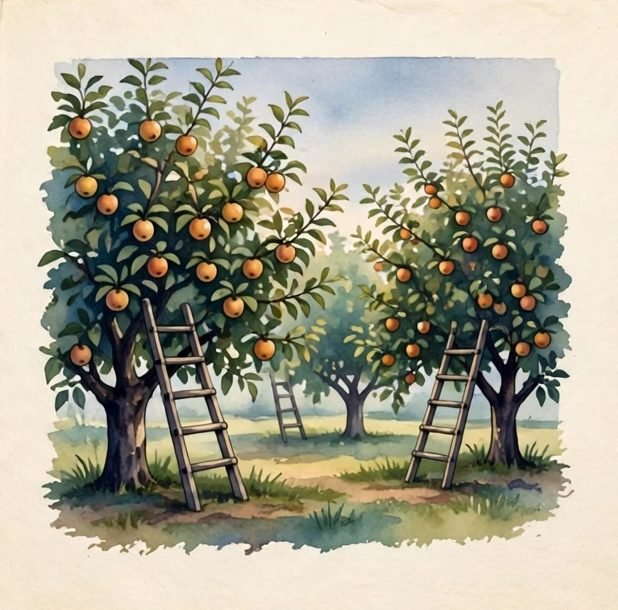
A healthy orchard in full leaf and fruit, ladders leaning on the trees.
The orchard in the plate stands in full leaf and full fruit, ladders leaning against the trees at the angles of a harvest in progress, everything about it unhurried and laden. Behind this door is the life in which the body never once interrupted the plans: no season lost to weakness, no year reorganized around a sickroom, no ambition quietly resized to fit a diminished strength. The plans were made at full size in this universe, and full size, year after year, is what got built. The desk keeps this file thin, because there is less to explain in it.
The desk handles this door with deliberate plainness, because it attracts superstition. This is a door about luck, the register says, in so many words — not about virtue, discipline, or desert. The never-ill self did nothing to earn the orchard's weather and knows it perfectly well, which is why this self is recorded, surprisingly often, as the most generous of all the other lives in the house: a person whose fruit was a gift of climate rarely grudges other people their share of the harvest, knowing the climate was never his achievement.
What this life lacks is entered in the final column, and visitors read it slowly. Strength that was never tested has no map of itself. The visitor's road, whatever it cost in lost seasons, included discoveries this orchard never required: what help actually is, how to ask for it without flinching, which people arrive when the ladders come down. Across this glass, the two lives regard each other with a courtesy the keeper considers the house working exactly as intended — neither envying the other wholesale, each holding something the other cannot supply.
36The One Who Started Ten Years Earlier
Two orchards stand side by side in the plate, divided by a low wall: one newly planted, its rows fresh and its stakes still bright with newness, and one ten years grown, canopies meeting overhead, fruit already a habit. Behind this door lies the life in which the work began at twenty instead of thirty — the trade, the study, the long project — and everything the visitor built is present there too, but ten years deeper into its seasons, with ten years' more rings in its trunk. The wall between them is low enough to talk across.
What the head start built is easy to see, and the register does not begrudge it: mastery arriving early, the long compound interest of practice doubling quietly in the dark, a reputation planted young and harvested for decades. What it cost is entered with equal care, because the decade used for starting was taken from somewhere. It was taken from wandering, from other beginnings tried and abandoned, from being gloriously and instructively unready — the very years whose produce, on the visitor's side of the glass, seasons everything the visitor later built.
The keeper's marginal note on this file is among the most copied sentences in the register, and visitors are permitted to copy it: an earlier start is a different life, not a better draft of this one. The late starter's trees were planted by a person the early starter never got to be — someone seasoned by the wandering decade, who chose the orchard with full knowledge of the alternatives. Some of the fruit on the visitor's side of the wall, the note concludes, grows in no other orchard in the house. The wall is low. Both sides can see it. That is enough.
37The Same Self, Elsewhere
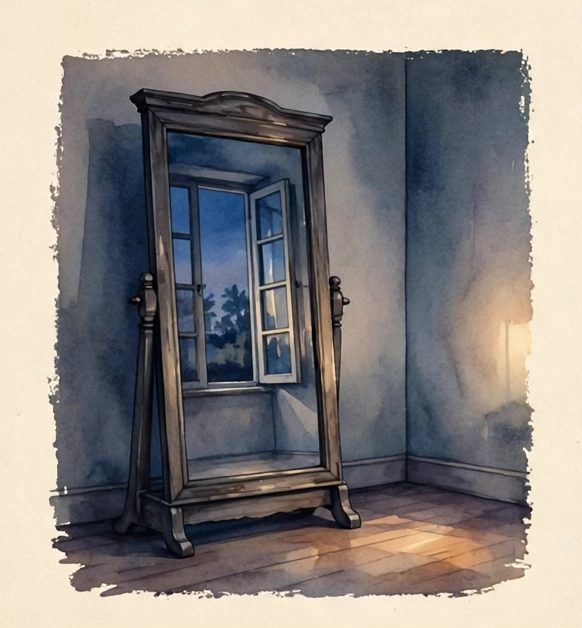
A tall mirror standing in an empty room, reflecting an open window.
The fourth hall opens with a mirror: tall, plainly framed, standing in an empty room and reflecting nothing but an open window and the weather beyond it. After three halls of differences — other cities, other work, other tables — the question of this hall turns, deliberately, to what refuses to differ. The mirror is the correct instrument for the turn. It shows the visitor no other person. It shows the same one, about to be examined across a hundred universes for whatever in him will not change its coat.
The method of the hall is comparison at the level of traits. Seat the other lives side by side — the stayed, the travelled, the risked, the safe, the married-otherwise, the started-early — and watch the same temperament take a hundred local forms, the way the same river takes the shape of every valley it crosses. The register has done this seating for many visitors now, and its finding is stable enough to be stated at the hall's entrance: the variable is circumstance. The constant is the person. The hall exists to let a visitor meet the constant properly, perhaps for the first time.
Visitors regularly report this the most unsettling hall in the house, and later, at the desk, the most comforting. The unsettling is easy to locate: excuses dissolve. The other selves had exactly the same material to work with — the same temper, the same gifts, the same evasions — so their different weather cannot be blamed on different clay. But the comfort is the same fact, read at a kinder hour: if the material was never the verdict anywhere, then it is not the verdict here either. What differs is circumstance. What persists is the hand doing the work.
38The Temperament Travels
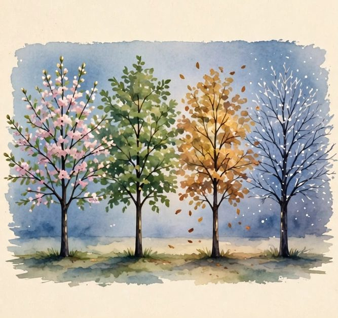
Four identical young trees in a row, each standing in a different season.
Four young trees stand in a row in the plate, identical in planting and in stock, and each is standing in a different season: one in blossom, one in full summer leaf, one turning, one bare against a winter sky. It is the house's emblem for the subject of this section — temperament under differing circumstance — and the keeper has it shown to every visitor who arrives believing that somewhere, behind some door, they became a different kind of creature altogether. They did not. They became the same kind, in different weather.
The register tracks the migration of traits with something like a naturalist's patience. The stubborn self is stubborn in every universe, though the objects of the stubbornness migrate: here a garden wall defended against the council, there a thesis, a recipe, a border, a way of loading a dishwasher. The evasive self evades in all climates. The generous self finds recipients everywhere, including universes with very little to give from. Temperament, the house concludes, is the luggage that is never lost in transit, however often the train is changed. The files read, side by side, like one file in four bindings.
This is not offered as a counsel of fate, and the keeper corrects any visitor who receives it as one. A trait that travels can still be trained — a tree can be pruned in any of the four seasons, though the pruning differs by season. But the pruning happens on this road, with these tools, in this weather; it does not happen by moving into the blossoming tree's universe and starting over in May. The other lives are neither an alibi nor an accusation. They are evidence that the work of becoming is portable, and therefore, on any road, actually possible.
39The Same Hungers, Other Kitchens
Along the street at dusk the kitchen windows light one by one, and in each of them pots are steaming, though no two windows frame the same meal. Behind every door in this hall, something is cooking — that is the keeper's way of opening the subject — and the hungers standing at the stoves are recognizably, almost comically, the same. The kitchens differ by universe. The appetite at the stove does not, and the register regards this as one of the kindest findings in the whole house. It is the keeper's favorite hour in the house, and she makes no secret of it.
The hungers have names in the file: for regard, and to be taken seriously by the right few people; for mastery, the feeling of a thing done properly under one's own hand; for a table with particular faces around it; for one room, or one hour, entirely one's own. The menus by which these are fed vary beyond counting — canvas and rope in one universe, columns of figures in another, a classroom, an orchard, a night shift with good company. But sit any of the other selves down at dusk and ask what the day owed them, and the answer arrives in the same words, in every kitchen in the row.
The desk draws the conclusion gently, because visitors draw it harshly on themselves if left alone with it. No other life cures the hungers, because the hungers are not defects of this life, correctable by a different address. They are the engine, and the engine is carried everywhere the self goes. A visitor who stops expecting another universe to feed them differently — who accepts that appetite itself is the constant — can finally cook in their own kitchen with appetite instead of apology, which the keeper considers the most practical sentence in this hall.
40The Flaws Come Along Too
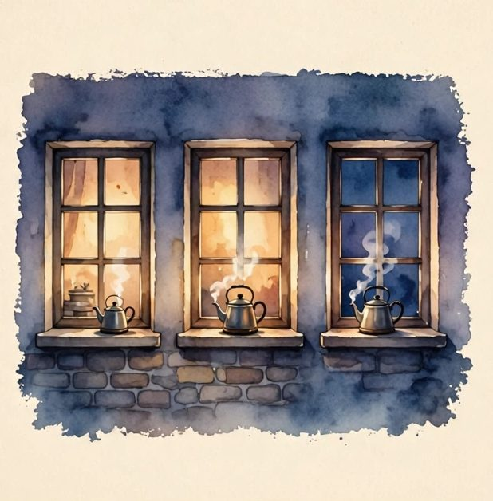
Three cottage windows in a row, a kettle steaming in every one.
Three cottage windows stand in a row in the plate, lamplit, curtains uneven, and in every one of them — the stayed cottage, the travelled one, the one in the far country — a kettle is steaming on the stove. It is the house's gentlest joke, placed at the end of the fourth hall where it belongs: in every universe the kettle of the self is on, the tea gets made, the evening gets met — and the flaws, faithful as the kettle, are on in every universe too. Nobody's luggage got lost. That includes the battered case nobody would claim at a station.
The register inventories the travelling flaws without relish and without surprise. The sharp tongue is sharp in the stayed life and the travelled one alike; it only changes its subjects. The procrastination emigrates without papers and is at work within a week of any arrival. The vanity finds mirrors in every climate, including climates with no mirrors, where it makes do with still water. The evasions keep their shape so exactly across universes that the keeper, reading the files side by side, can predict the next decade's file from the last one — and does, in the margins, in pencil.
Visitors sometimes laugh out loud in this section of the corridor, unexpectedly, at their own expense, and the keeper counts the laughter among the hall's successful outcomes. A flaw that exists in all universes cannot be this life's private shame, to be hidden from the neighbors. It is a trait, to be worked with, here — where the tools and the time actually are — while the other lives, flaw for flaw and kettle for kettle, get on with the identical work behind their doors, at the same hour, in different weather.
41Kindness, in Every Universe
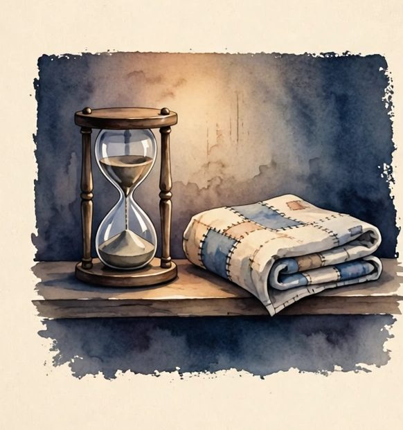
A shelf holding an hourglass, and beside it a cloth neatly mended, its patches sewn small and even.
In the first room of this hall the keeper keeps a shelf that appears, in some form, behind every door she has ever opened: an hourglass with its sand mid-fall, and beside it a cloth that has been mended more than once, the patches sewn small and even by a patient hand. Visitors read the shelf as a riddle until she explains it. The hourglass is time, which runs the same in every universe. The cloth is kindness, which is always the same two motions — something torn, and somebody sitting down to repair it.
The lives behind the doors differ in almost everything a biography can hold: the city, the weather of the century, the work, the name on the gate. But the register, which has been kept long enough to have earned its conclusions, records the mending in every single one. In one universe it is a coat darned by firelight for a stranger who knocked in the rain. In another it is a debt quietly forgiven and never mentioned again. In a third, a famous one, it is soup carried across a city to a house that the newspapers would not have understood.
The keeper is careful about what this proves, because the house deals in seeing plainly and not in comfort sold as doctrine. Kindness in every universe does not mean every universe is kind; several of the lives are set in hard countries and harder years. It means the mending is in the person, not in the furniture. Circumstances decide how much cloth there is and how often it tears. They do not decide whether the hands, when the tear comes, reach for the needle. That, the register suggests, was settled long before any of the roads split, and it travels with the self through every door.
42The Same Laugh, Heard Elsewhere
Visitors sometimes stop in the corridor of this hall and stand quite still, because from behind one of the doors they have heard a laugh they know. It is their own laugh, unmistakably — the same catch in it, the same way it gives up halfway and starts again — coming from a room where some joke, in some other kitchen of their life, has just landed better than jokes usually land. The keeper lets them listen as long as they need to. She has heard it herself, from several doors, and she no longer pretends it is a small thing to hear.
What changes from universe to universe is not the instrument but the repertoire. In one life the self is solemn at table and laughs mostly at weather and animals. In another, quicker and more public, the laugh runs ahead of the story and apologizes for nothing. In a third, a guarded one, it is heard so rarely that the household treats it the way one treats a bird at the feeder — nobody moves, nobody reaches for anything, everyone is quietly glad. The laugh itself, its pitch and its timing and the breath it costs, stays stubbornly the same through all of it.
The keeper calls the laugh the house's friendliest piece of evidence. A face can be altered by a road; a biography can be rewritten by a single year; but the laugh is the self caught off duty, and it testifies without knowing it is testifying. Visitors who have stood a while in the corridor tend to leave this hall less afraid of the other lives. The person behind the door is not a stranger wearing their name. It is themselves, at another table, in another light, finding something funny — and being found by it in exactly the same way.
43What No Universe Edits Out
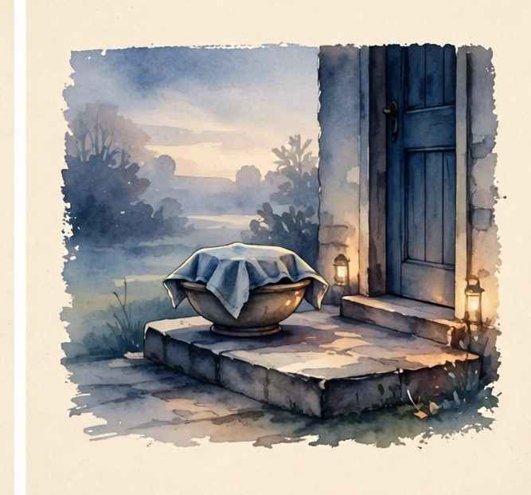
A doorstep at dawn with a covered bowl left on it, a clean cloth laid over the top.
Every morning, in one of the quieter lives behind these doors, somebody leaves a covered bowl on a doorstep — broth for a house that is grieving, set down before the household wakes, the cloth over it still warm from the kitchen. The keeper chose the plate for this room deliberately. Behind every door there is some version of that doorstep: a sorrow being carried to, a trouble being fed. The universes are generous editors of circumstance. They move the city, spare the illness, save the ship. But there is a short list of things no universe the keeper has opened has ever managed to edit out.
The list is plainer than visitors expect. There is loss in every life, though its name and date are different in each. There is a capacity for shame, and the same capacity, turned like a coat, for tenderness. There is the body and its one unnegotiable appointment. There is the fact of other people, who cannot be relied on to behave as the story requires. The universes rearrange these the way a thrifty household rearranges furniture — everything moved, nothing thrown away. What the visitor finds behind the fifth door and the fiftieth is not a life without the hard furniture, but the hard furniture in a different room.
The keeper does not offer this as a bleak doctrine, and the register does not record it in a bleak hand. What cannot be edited out can still be carried differently — set by the window instead of the door, fed broth instead of hidden. The lives differ most, she finds, not in what they contain but in where they put it and how much light it gets. Visitors leave this room slowly, thinking about their own arrangements. That, the keeper says, is the bowl's whole purpose: nobody eats it. It simply proves that in every universe, someone is still being looked after.
44Talents Surface in Any Soil
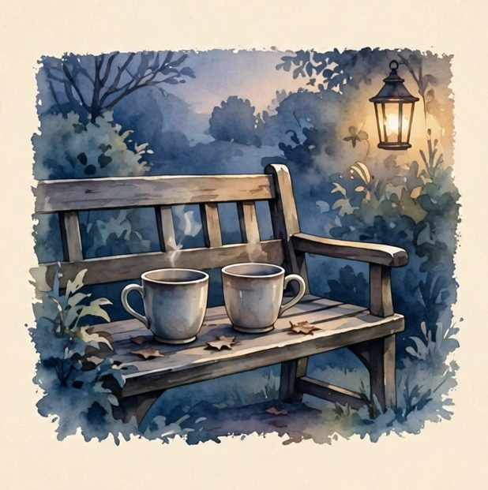
Two cups left on a garden bench, as if a conversation had only just paused.
On a garden bench in one of the lives — the one where the self became a gardener in a walled town and never left it — two cups stand where a conversation paused an hour ago and never quite resumed. The keeper points out what the cups mean. The gardener's gift, in that universe, is listening: plants and neighbors alike are given the whole of an unhurried attention, and things grow under it that do not grow elsewhere. In another universe the identical gift runs a busy workshop, where apprentices flourish because someone finally hears what they are actually asking. In a third it keeps the books of a harbor, and skippers trust the ledger because the listener misses nothing.
A talent, the register concludes, is a seed and not a statue. It does not arrive in its final shape and demand a matching world; it arrives as a pressure, a leaning, and takes the shape of whatever soil it is given. The hand that would have painted harbors repairs clocks in one universe and is thanked for it. The ear that would have conducted orchestras tunes pianos in another and is, by every account the keeper has gathered, content. Visitors arrive at this room carrying a particular grief — the gift they believe this life wasted — and the room does not argue with the grief. It simply shows them the other benches, and the other cups.
What the keeper will not allow is the conclusion that the soil does not matter, or that any talent surfaces equally well in any life. Some universes starve the seed for years; one or two let it go entirely to leaf. The point is narrower and kinder: the leaning itself does not die when the road turns. It waits, it adapts, it finds smaller and stranger doors. And the actual life, the one the visitor is still standing in, is not finished handing out soil. The bench is still there. The cups have not yet gone cold.
45Fears Change Their Costumes
There is a hallway in the house where the keeper hangs coats, and she walks visitors past it on the way to the deeper doors. Each coat belongs to a fear. In the coastal life the fear wears oilskin and smells of rope: it is the fear of water, learned young and never unlearned. In the mountain life it wears boots and a short cloak and will not look down from bridges. In the merchant's life it is a good dark suit, well kept, and it fears the ledger's last page. The coats are well made, all of them. The keeper has them brushed and aired like garments that will be needed again.
Underneath the costumes, she points out, the shiver is the same shiver. It is rarely the water or the height or the debt that the self is guarding against; it is the older thing those garments dress — the fear of being helpless in front of witnesses, of the ground changing its terms without warning. The universes, which are tireless tailors, fit the fear to the local weather and the local biography, and the fit is so good that each self believes its fear is personal, even peculiar. Seeing the whole row of coats on their hooks tends to correct that. A fear with forty costumes is not a private defect. It is part of the traveling wardrobe.
The use of the hallway is practical. A visitor who has seen their fear in oilskin and in a good suit stops arguing with the costume and starts recognizing the wearer. The fear does not leave — the house promises nothing, and certainly not that — but it is demoted from a prophecy about the world to a fact about the self, and facts about the self can be carried the way coats are carried: over one arm, into whatever weather the actual road provides. The keeper closes the hallway door gently behind each visitor. The coats hang on in the dimness, patient as furniture, waiting for no one in particular.
The Crossroads Desk
One desk receives all correspondence for this house — questions, corrections, and word of any other life a visitor has been looking at: the door they wonder about, the split they keep returning to. It is read in the order it arrives, and entered in the register of other lives.
46The Core Is Smaller Than Feared
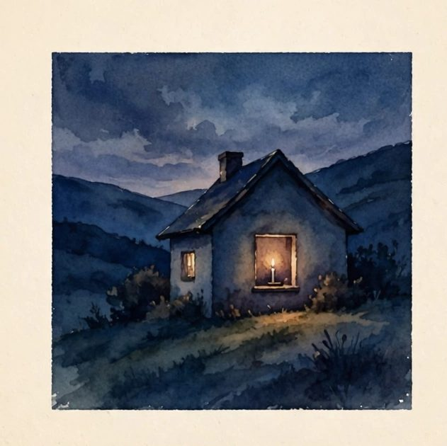
A single candle burning in the window of a house on a hill, seen across the dusk.
On the hill above one of the lives stands a house with a candle in its window, a plain tallow light that the household keeps burning for whoever is walking home in the dark. The keeper uses the plate to open the room's question, which visitors usually bring with them and are usually afraid to say aloud: if you took away the city, the work, the name, the history — the whole biography that a road builds around a person — what would actually be left. Most people fear the honest answer is very little. The house, having performed the subtraction behind many doors, reports otherwise: the answer is little, and the little is enough.
Take the accidents away one by one, as the universes do. The profession goes; a person who kept accounts in one life herds goats in another and is recognizably the same creature at the work. The address goes, the reputation goes, the audience goes. What remains fits comfortably inside the candle's small circle: a particular way of attending to things, a loyalty that does not advertise itself, a humor with a recognizable limp, a stubbornness about one or two unglamorous decencies. The keeper calls this the core, and notes that it is not a soul in any grand costume. It is a set of leanings, no heavier than a candle, and it burns in every house on every hill.
Visitors who feared emptiness tend to leave this room relieved, and the keeper is careful with their relief. The core is small, she says, but it is not a consolation prize; it is the only part of a person that every road, however hard, is guaranteed to deliver. Lives differ enormously in what they build around it. Palaces and huts both appear in the register, and the candle burns in the windows of each with the same flame. To know what your own small light consists of — that is the room's whole assignment. It is lighter luggage than most people pack for, and it travels anywhere.
47You Would Know Them in a Crowd
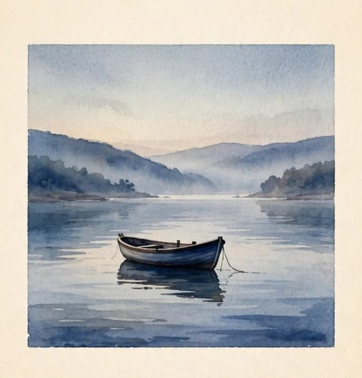
One small boat at rest on a calm bay at dawn, its rope coiled, its oars shipped.
At dawn, in the harbor life, a small boat rests on water so calm that the harbor lights stand doubled in it, the rope coiled in the bow with a particular neatness. The keeper begins this room there because of the rope. She maintains that if you were set down, without warning, in a crowd of strangers in any universe — a market, a station, a harbor at first light — you would find the other self within the hour, and not by the face. Faces are changed by roads more than visitors expect. You would know them by the rope: by the way the hands finish a task and set it down complete.
Recognition, in the register's long experience, runs on manner rather than biography. It is the pause before answering a careless question. It is what the eyes go to first in a new room — the door, the window, the oldest person, the dog. It is the thing the person cannot walk past without stopping: a crooked picture, an unlatched gate, a stranger carrying too much. These leanings are older than any road and survive every rerouting the universes have attempted. The crowd is full of strangers, all of them somebody's whole life. Among them, one gait, one way of turning at a sudden sound, is yours.
The keeper finds this the gentlest evidence the house owns that a self is not merely the sum of its roads. Roads explain the coat, the calluses, the accent, the opinions about weather. They do not explain why the same person, waking in a harbor town or a mountain one, arranges the rope the same way before the day has asked anything of them. Visitors leave the room looking at crowds differently for a while — their own crowds, in their own actual streets — wondering how many of the strangers around them are being recognized, at that exact moment, by someone. The harbor keeps its calm. The boat rocks once, and settles.
48Strangers to Themselves, Some of Them
Not every door in this hall opens on a recognition. The keeper keeps one mirror in the corridor turned at a slight angle, so that it catches visitors unprepared, and she did it in honor of the lives behind the quietest doors: the ones where the self became a stranger to itself. It happens by slow degrees in every universe, including the visitor's own. A person hurries for years, or defends for years, or obliges for years, and one evening passes a mirror and is met by someone whose errands they know by heart and whose company they cannot remember choosing.
The house does not treat these lives as failures, and the keeper corrects visitors who do. Estrangement from oneself is a condition, like weather in a room, and it has causes the register can list without scolding: grief that was never given a chair, work that ate the margins where reflection lives, love that required a smaller and smaller performance until the performer lost the thread of the original. Behind one door the self is a celebrated stranger, applauded by thousands and unknown to the one person sleeping in its bed. Behind another the estrangement is humble and total, and no one outside the mirror has noticed.
What the house offers these lives is only the corridor and the angled glass: the suggestion that being a stranger to oneself is a state, not a sentence. Acquaintance, the keeper notes, can be resumed at any age and from very little — an unhurried morning, a truth told in a low voice, a task done for its own sake. Some of the selves behind these doors have already begun the walk back, in their universes, without any help from the house. The mirror keeps its angle. It is not there to accuse anyone. It is there so that no visitor walks past the possibility without at least glancing at it.
49What Each Life Costs
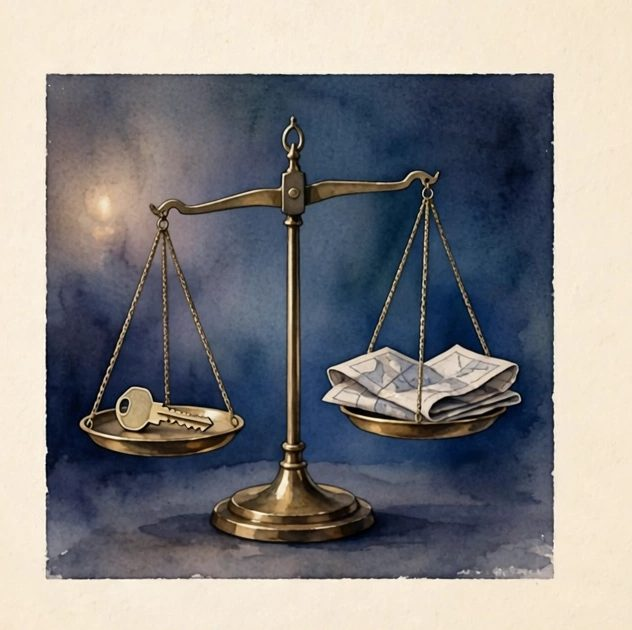
A balance scale with a plain key on one pan and a folded, blank map on the other.
At the Crossroads Desk the keeper keeps a scale, and it is the first thing visitors see when they enter the cost halls: an old balance with a plain iron key on one pan and a folded map on the other, the map blank, as all the house's maps are, because no life's roads can be printed in advance. The key is what a life opens. The folded map is the roads inside that life that were never unfolded, the country it contains and will never visit. Every life brought to the desk is weighed on this scale, and every life, without exception, moves both pans.
The weighing is not a punishment and the keeper tolerates no theater about it. Cost is arithmetic, not verdict. A life spent deep in one valley, learning its water and its people across fifty years, has paid for that depth with the coast it never lived on and the person it never became there. A life spent traveling has paid the opposite bill. The scale does not tip toward blame in either direction; it simply registers that a finite creature cannot spend the same hour twice, and that this fact — not failure, not fate — is the whole machinery of cost.
What this hall exists to do is make the arithmetic visible before it is felt as grievance. Visitors tend to carry their own life's costs as suspicions, half-sensed, easily mistaken for evidence that the road was wrong. Set on the scale beside the folded maps of all the other lives, the same costs look like what they are: the ordinary price of a real good, charged to everyone, in every universe, at the same honest rate. The key on the pan is not light. Neither is the map. The keeper leaves the scale where it is, in plain sight, and lets the balance make the argument.
50Every Road Closes Others
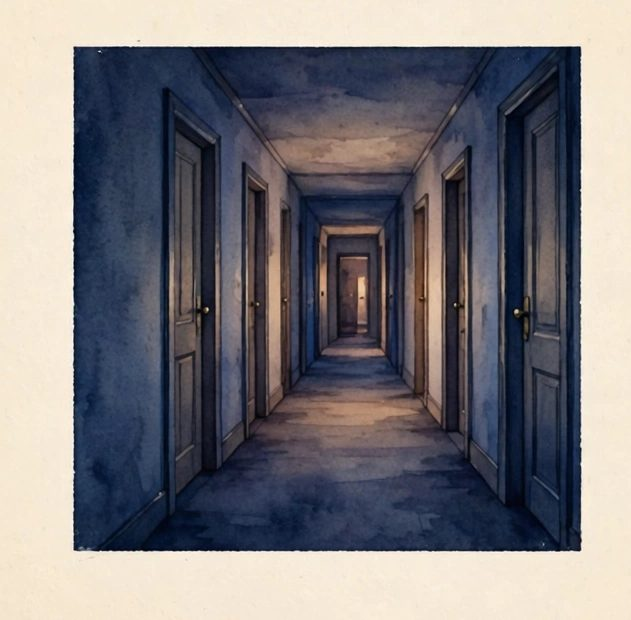
A corridor of doors closing one after another into the dusk, their latches settling softly.
In the evening the corridor of this hall performs its one unplanned ceremony. As the light goes, the doors along it close one after another, not slammed, not locked — settling on their latches with small wooden sounds, the way doors do in houses where someone has gone along and drawn them to for the night. The keeper does not arrange it, or says she does not. It is simply what the house sounds like at dusk, and she sends visitors to walk the corridor at that hour because the sound makes this room's doctrine better than any paragraph the register owns. Every road, walked honestly, closes others behind it.
The fantasy the sound corrects is the life that keeps every door open: the career and the cottage, the city and the coast, the love chosen and the love deferred, all held in permanent readiness. The house is blunt about that life. It is not a life; it is a corridor. To be somewhere — really be there, known by the neighbors, answerable to the place — is to have let the other doors go quiet. The selves behind them are not wronged by this. They are simply not the one who got the years. Years are the only currency the universes share, and they cannot be spent in two countries at once.
Visitors are asked to listen to the closing without flinching, and most manage it by the second evening. A door closed behind you is not a rebuke; it is the construction of the room you are standing in. Walls are what make a room a place to live rather than a place to pass through. The keeper walks last along the corridor, testing each latch with the flat of her hand, not to imprison anything but to confirm the house is in order. Behind every quiet door, she says, a whole life is going on without you, at full strength. That is not the tragedy of the arrangement. That is the arrangement.
51The Price Is Paid in People Not Met
The heaviest line in any life's ledger is not counted in money or in years. It is counted in people. Every road a person walks is also, without anyone deciding it, a guest list: the valley life has its valley friends, met over fences and harvests and forty years of weather, and the sea life has its harbor friends, and neither company can be transferred to the other road. To have taken the other train is, among other things, to have never met the person who in this life taught you the thing you now cannot imagine not knowing — the grip, the recipe, the way of forgiving an enemy that arrived in their voice and no other.
The keeper insists on entering this cost plainly because visitors consistently underweight it, dazzled by the countable losses — the income, the house, the title on the door. People are the actual furniture of a life; the rest is weatherproofing. Behind one door stands a self who never met the friend who, in this universe, talked them out of the worst year. Behind another stands a self unmet by the difficult teacher whose strictness became a spine. These are not sentimental entries. They are structural. A life is built out of its meetings more than out of its plans, and every road is, quietly, a list of who will not be there.
What the hall does with this arithmetic matters. It does not use it to frighten visitors back into their own lives, and it does not use it to sadden them at the doors. The keeper sets the two truths side by side and lets them stand: the unmet are a real price, paid by every life including the brightest; and the met — the actual company of the actual years — are the corresponding entry, too often left unexamined because they are near. Grief for the unmet and gratitude for the met are, in the register's phrase, the same coin turned over. The hall asks only that visitors turn it over deliberately, now and then, instead of spending it unexamined.
52Rooms This Life Has That Others Lack
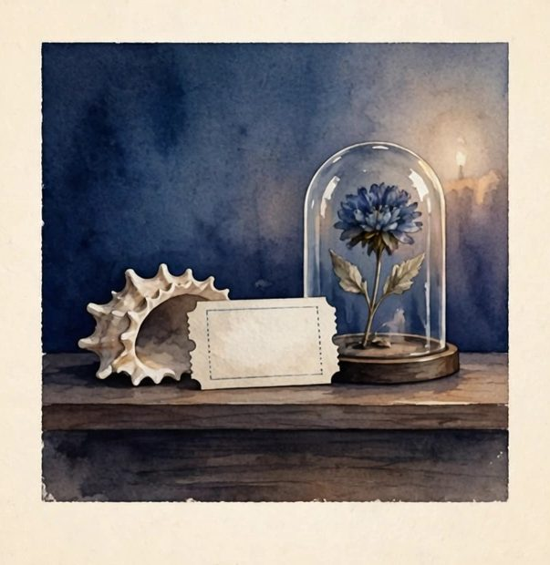
A small room of kept treasures: a shell, a blank ticket, and a dried flower under glass.
The house keeps one small room that is not behind any door, because it does not belong to another universe. It belongs to the visitor's own. In it, on a plain shelf under glass, the keeper has arranged the kind of things every actual life accumulates without noticing: a shell from a beach that only this road ever reached, a ticket bought and never used, a flower dried between the pages of a year that happened once and in no other telling. Visitors arrive at this room braced for envy, fresh from the brighter doors. The room turns the feeling around in the hand, gently, like a stone being examined from its other side.
For the plain fact of the matter is that the famous life has no such shell; its beaches were photographed and its summers scheduled, and some small bright thing this life picked up unobserved was never picked up there. The easy life never kept the flower, because its gardens required nothing and taught nothing and so were walked through quickly. The life where it all went wrong has treasures of a different order entirely, and would trade none of them, which surprises its visitors most of all. Every actual life, looked at at this range, turns out to be a cabinet of unrepeatables: people, weathers, jokes, rescues, and small salvaged objects that exist in exactly one universe.
The exercise of the room is simple and the keeper enforces it kindly: before leaving, each visitor names — aloud, to the register, in one sentence — one thing their own life holds that no other life holds. The naming is harder than expected and then suddenly easy. A mother's phrase in a dead dialect of the family. A skill learned from a person now gone, carried nowhere else on earth. The harbor at a particular age of the light. Once named, the thing cannot be un-named, and the envy the visitor carried in tends to leave by a different door than the one they entered.
53What the Other Life Envies in Yours
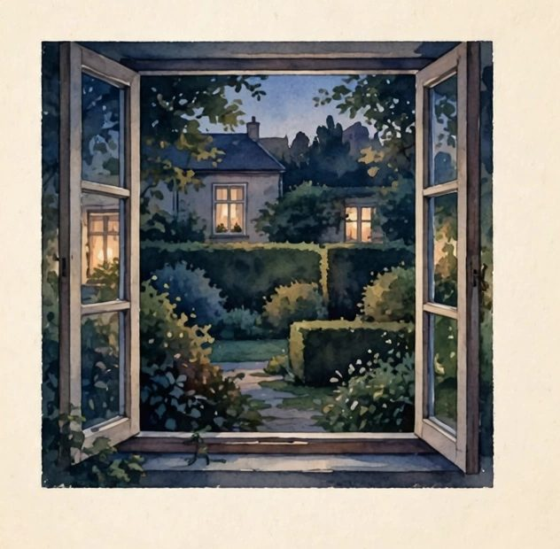
A window looking across a dark garden at another lit window, lamplight in both.
There is a window in this room that looks across a garden at another window, lamplit, with a figure's shadow passing now and then behind the curtain — no face, only the evidence of a life being lived at ordinary speed. The keeper makes every visitor stand at the first window a while, because the looking in this house, she insists, runs in both directions. Behind the brighter door stands a self who crosses to their own window at the same hour and looks across at yours, and what they see there, from that distance, is not the life you would have described. Distance edits kindly in both directions.
Envy, the register has concluded, is a poor traveler. It crosses the glass carrying an edited portrait and never declares the editing. You envy the other life's applause; the other life envies your unbroken sleep, the friend whose name it never learned, the fact that your ordinary Tuesday is not performed for anyone. It covets the rooms you would have listed as your costs. It does not see the bills, exactly as you do not see its bills, and it stands at its window some evenings sincerely believing the garden separates the fortunate from the rest. The keeper finds this symmetry not mocking but merciful. It means the feeling is weather, not measurement.
The exercise this room teaches is a completion. When envy rises at a door — and it will, the house makes no apology for that — the visitor is to finish the picture by asking what would be envied from the far side, and to answer honestly, at length, in the register if necessary. The question does not scold the envy away. It informs it, which is the house's whole method with every strong feeling. What usually survives the exercise is not envy at all but a short, precise list of true wants — and a true want, unlike envy, can be carried home and used.
54No Life Gets Everything
It is the plainest sentence in the cost halls, and the one visitors resist the longest: no life gets everything. Not the brightest door in the corridor. Not the road where it all came easy. Not the road the visitor would choose tomorrow with both eyes open and the whole map unfolded. The keeper has had the sentence lettered nowhere and enforced everywhere, because she finds that people believe it exactly in proportion to how slowly they are made to walk past the evidence. The stalls of every life, at closing time, stand half full and half empty. The proportions vary. The halving does not.
Each life is a selection, and a selection means a remainder. The life of adventure lacks the long quiet in which certain thoughts ripen; the life of quiet lacks the storm that would have taught it what it was made of, and knows it, some evenings, without bitterness. The life of the valley lacks the sea. The life of the sea lacks a grave it can visit. None of this is tragedy in the house's accounting; it is the shape of finitude, the same shape that makes a day have an evening and a loaf have a last slice. A life that somehow got everything would not be a larger life. It would be a warehouse, and nobody lives in one.
Once the sentence is genuinely believed — and the keeper can tell the difference between believing it and reciting it — it changes from a deprivation into a permission. The actual life stops having to apologize for its remainder. The unlived rooms stop presenting themselves as indictments and become what they always were: the necessary shadow of the lived ones, the cost of there being a shape at all. Visitors leave this room, the register notes, with a particular quietness, as if a long argument in another part of the house had finally been settled — not won, settled, which is better.
55The Costs Are Not Symmetrical
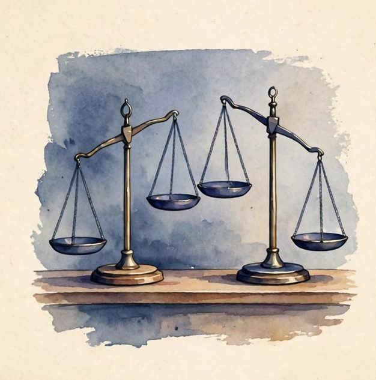
Two balance scales on a shelf, tipped unevenly in opposite directions, neither at rest.
On the keeper's shelf stand two balance scales, and they have never once agreed. One tips toward its left pan, the other toward its right, and no adjustment of the weights the keeper owns will bring them level at the same time. She keeps them as the room's whole argument. Fairness, understood as symmetry, is not among the house's doctrines. One life pays its costs early and lightly, in the currency of small embarrassments, and coasts. Another pays late and in full, in a currency nobody would choose. A third pays steadily, a fourth almost entirely in one terrible spring. The bills are real in every case. They are not the same bills.
The asymmetry is not an injustice the imagination is hired to correct, and the keeper is firm with visitors who arrive wanting the doors rearranged into something fairer. Behind the doors, the lives did not agree to a common ledger. The sea life counts its costs in people lost to distance; the valley life counts its own in chances that never arrived to be refused; the famous life pays in a coin the quiet life has never handled. Comparing the accounts line by line is a fool's errand, not because comparison is forbidden — the whole house is comparison — but because the currencies differ, and no exchange rate is posted.
The counsel the room offers is therefore modest: count your own costs in your own coin, and let the other lives keep their own arithmetic. This is harder than it sounds. It means giving up the suspicion — almost universal among visitors, and almost never spoken aloud — that somewhere behind some door a life was issued the same starting hand and played it without loss. No such life is in the register. There are only the two scales on the shelf, tipped their opposite ways, kept dusted, making their silent point to everyone who stands in front of them long enough.
56Some Prices Only Show Later
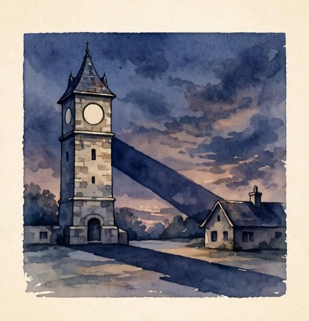
A clock tower at dusk, its long shadow reaching across the square to a small house.
At dusk the clock tower at the end of the square throws its shadow the whole length of the town, until it reaches a small house and lies across its garden like a hand. The keeper chose the plate for its patience. Some prices are like that shadow: they are invoiced years after the road was chosen, and they arrive quietly, at an hour when nobody is watching the square. The visitor who left the valley at twenty does not receive the bill at twenty. It arrives at fifty, in a conversation they cannot join, in a dialect of local knowledge they no longer speak.
The road not taken keeps its own late accounts, and they are not all debits. The skill never learned presents its bill in the one winter it is needed; the language never studied presents its own at the border of a friendship that might have been. But the register is equally full of late dividends: the unfashionable patience that becomes, decades on, exactly the medicine a household needs; the friendship neglected for work and then, late, repaid with interest by the friend's grown children. A life, the keeper says, cannot be audited at halftime, and most visitors are attempting precisely that audit when they arrive at her desk.
The room's practice is therefore a kind of bookkeeping patience. Entries are left open. Columns are not totaled in pencil by frightened hands. The visitor is asked to hold their own ledger the way the keeper holds hers: in ink for what is known, in open space for what has not yet presented itself, and without the conviction that the shadow currently crossing the garden is the final entry. The tower will throw its shadow again tomorrow, over a different garden, and some of what looks like a price at dusk looks, in the morning's accounting, like the cost of having a garden in the sun at all.
57Counting Costs Is Not Ingratitude
Visitors sometimes confess their arithmetic to the keeper as if it were a fault of character. They have counted what this life cost — counted it carefully, at night, more than once — and they arrive half expecting the house to reprove them, as if a price honestly totaled were a thank-you note never sent. The keeper pours the tea and disagrees without heat. In her bookkeeping there are two ledgers, and they are kept in different inks. Gratitude looks at what is present and names it. Counting looks at what was spent and names that. A householder who refuses to count is not grateful. They are uninformed, and the uninformed make poor keepers of their own lives.
She is equally plain about the opposite failure, since the corridor supplies it weekly: the visitor who counts and counts and calls the counting honesty, while the other ledger — the one with the names, the weathers, the undeserved kindnesses — goes unopened for years. That is not arithmetic either. It is a preference dressed as rigor. The house's method is unglamorous and complete: both books open on the desk at once, the tea going cold between them, thanks in one hand and arithmetic in the other. The keeper has watched the two hands for a long time. They do not fight. They were made, she says, by the same person, for the same house.
What visitors take from this room is usually not a technique but a pardon. They are allowed — by the only authority the house recognizes, which is plain sight — to know exactly what their road cost and to be grateful for the road in the same breath, without performing either feeling to excuse the other. The register records the interviews in a steady hand. Now and then a visitor asks whether the keeper keeps both ledgers for her own life, and she answers that she keeps three: the third is for what the counting itself cost, in evenings, and it is the thinnest book she owns.
58The Cheapest Life Is Not the Best
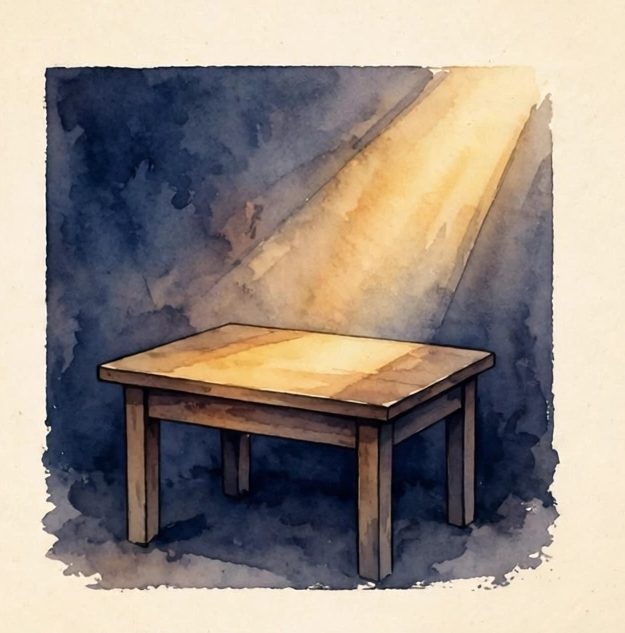
A plain wooden table, beautifully bare, standing in a shaft of afternoon light.
There is a door in this hall — the keeper does not point it out; visitors find it — behind which a life was lived at the lowest possible cost of any in the register. Nothing was risked that could be declined. Nothing was spent that could be saved. No one was loved at an inconvenient depth, no road was taken that charged a toll, no promise was made whose keeping might invoice the heart. Its room, when the visitor steps through, contains a plain wooden table of real beauty, beautifully bare, standing in a shaft of light that has been falling on its emptiness for years. It is the emptiest room in the house, and the quiet in it is not peace.
The table explains itself, slowly. It was never set, because guests are a risk and a cost, and so no one has eaten at it in company. No map was ever unfolded on it, because roads charge their tolls in advance and this life declined the currency. No letter was written on it that said the unsayable thing; the unsayable was saved, at compound interest, forever. The keeper keeps the door unlocked and the room dusted as a standing correction to a certain respectable doctrine — the doctrine that the well-kept life is the one that spends least, loses least, and arrives at the end with its accounts immaculate and its table bare.
Cheapness, the register concludes, is a metric and not a virtue, and the best-kept lives in the house are very often the most expensive ones on file — spent heavily on people, on places, on work that might fail, paid in the only currencies that cannot be recovered. The shaft of light in the empty room is real light, and the keeper does not mock the life that lived there; someone chose its safety honestly, and safety is a good. But visitors are not asked to admire the table. They are asked to notice that they do not envy it, and to remember that noticing the next time their own accounting tempts them to call the cheapest version of their life the best one.
59What This Life Paid Gladly
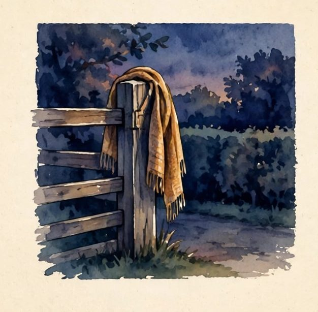
A scarf left hanging on a gatepost at evening, still warm-looking in the last light.
At the end of a walk, in one of the lives, somebody has left a scarf hanging on a gatepost — left it for the walk home in the cold, or left it behind entirely, the keeper has never decided and does not need to. She chose the plate because this room is about the costs that were not extracted but offered: the years given to a person, a place, a piece of work, paid the way one leaves something warm at a gate for a traveler one loves. No invoice was ever issued. That is precisely what makes the entries in this room's ledger different from every other page in the cost halls.
The register keeps a page for glad payments, and it runs longer than visitors expect when they are invited to guess its length. The apprenticeship that cost a decade and a fortune in forgone wages, entered by its owner in a level hand. The care of a parent that cost a career its first rank and its second. The staying — in a town, in a marriage, in a friendship through its worst weather — that cost the road not taken its whole shining alternative. Read down the page and a pattern surfaces: the glad payments are almost never regretted by the people who made them, even when the thing paid for was lost anyway. The gladness was not in the outcome. It was in the fit between the price and the payer.
The keeper's suggestion, offered to every visitor before they leave the hall, is that they draft their own page — not for the house, which has enough paper, but for the drawer at home where the other ledger lives. A cost remembered as glad changes the temperature of the whole account. It does not erase the hard entries; it re-shelves them, between the years given to what mattered and the years spent on what did not, and a person who can tell those apart at a glance is, in the keeper's long observation, most of the way to being at peace with the bill. The scarf stays on the gatepost. Somebody, in some universe, is walking home the warmer for it.
60The Ledger Is Kept Without Blame
At the end of the cost halls stands the ledger itself, bound in cloth the color of the evening corridor, and its first rule is the only one the keeper states as a rule at all: the book is kept without blame. Not blame of the self who chose — the young one, at the crossroads, with half a map and a head full of weather. Not blame of the chance that dealt the hand, the illness, the war, the letter that arrived a day after the decision it would have changed. The register has columns for causes and columns for costs. It has no column for fault, and the keeper has refused, across many years and many requests, to rule one.
Blame, she explains when visitors ask, is a poor bookkeeper. It falsifies the entries it touches, because it charges the past with knowledge only the present owns. The self who took the road at twenty is entered in the ledger with the information available at twenty — not with the visitor's fifty-year-old hindsight riding on its back like a second passenger. Correct the entries for information and most of them stop looking like crimes and start looking like what they were: reasonable wagers made by a person of limited light, some of which came home and some of which did not. The house regards this correction not as mercy but as accuracy, which it values more.
Visitors close the hall quieter than they entered it. The arithmetic of their lives, done in full at last, turns out not to have been an accusation waiting for a total. It was only ever a way of seeing the shape of a life — its valleys and its harbors, its folded maps and its plain iron keys — while the life is still, in the only tense that matters, being spent. The keeper ties the ledger's tapes and turns the lamp low. Behind the doors, the other lives go on without her. In front of the desk, one life at a time goes home with its book balanced, which is not the same as its book closed.
The Crossroads Desk
One desk receives all correspondence for this house — questions, corrections, and word of any other life a visitor has been looking at: the door they wonder about, the split they keep returning to. It is read in the order it arrives, and entered in the register of other lives.
61The Lives That Frighten and Beckon
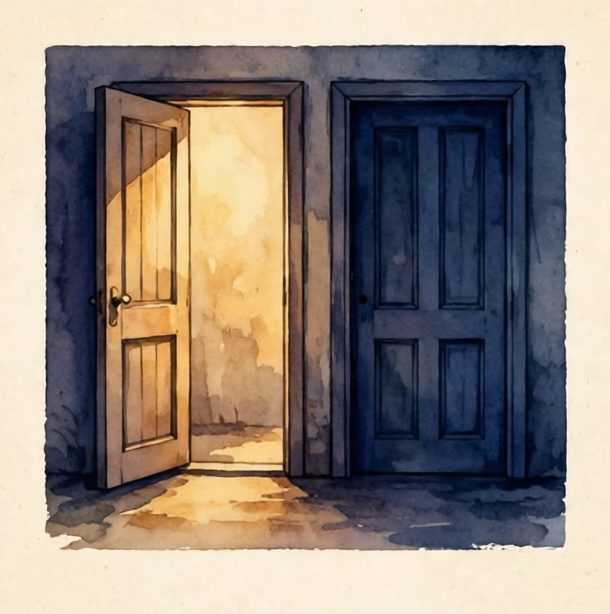
Two doors side by side, one spilling gold light across the floor, one in deep blue shadow.
Beyond the cost halls the corridor changes its character, and visitors feel it before they can name it. The doors here stand in pairs, and the keeper has stopped pretending the pairing is architectural. One of each pair spills gold light across the floorboards, warm as a hearth in another country. The other stands in a blue shadow so complete that its handle has to be found by memory. Between the two doors, in the space of a single step, the visitor feels the two oldest pulls the house knows: the pull toward, and the pull away. This hall is where those pulls are looked at, the way everything in the house is looked at — plainly, and at length.
The pairing, she explains, is not a sorting of lives into the good and the bad. Every life in this hall is double-natured, and the corridor's arrangement merely makes the doubleness visible. The bright lives frighten a little, on inspection: their exposure, their price, the height from which their falls would be falls. The dark ones beckon a little, and the beckoning is harder to admit: their refusal of striving, their long rests, the strange relief of a life in which nothing more can be taken. The keeper does not tidy any of this into a lesson. She has watched too many visitors discover, at the same door, a fright and a longing holding hands.
The hall's rule is the simplest in the house and the one most often quoted back to the keeper at the desk: look at both doors with the same eyes. What draws you and what repels you are both information, and the information is as much about the looker as about the life. A door that frightens everyone frightens no one in particular; a door that frightens only you is a sentence in your own biography, written in a hand you may not yet read fluently. The corridor keeps its gold and its shadow side by side, without apology, and the visitor walks it slowly, learning the difference between a warning and a weather vane.
62The Brighter Door
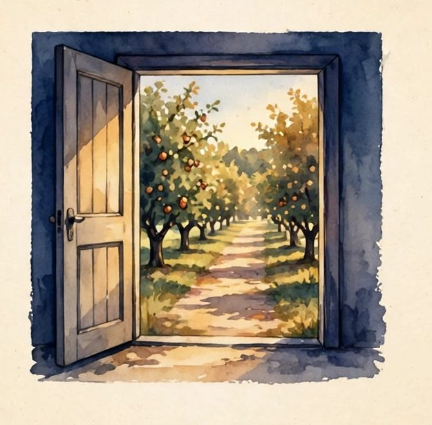
A door opening onto a sunlit orchard path, the trees in rows, the grass lit gold.
The brighter door opens onto an orchard path in full sun, and the keeper, who understands the order of her visitors' curiosities, brings almost everyone here first. In the standard telling, this is the life where the work was recognized in time, the love was returned in kind, the risk was rewarded in public — the life that asks, from its sunny threshold, why anyone would have chosen anything else. The light is real light. The keeper does not deal in painted scenery, and she lets visitors stand in it as long as they need, feeling its warmth on their faces like weather from a country they were promised and never issued.
Then, because the house deals in seeing plainly, she points out the details the first look skips. There is a ladder against the tallest tree, and it is worn smooth at the rungs. There are baskets stacked and waiting, more baskets than the path's shade can account for, and a pruning hook hung by the gate with an edge on it. The bright life is not an idle one. Its sun is a working sun, and its afternoons are as long and as task-filled as any in the register; the difference is that the work is witnessed, and sweetened, and the harvest is not eaten alone. The orchard's keeper, in that life, has calluses indistinguishable from the ones behind the darker doors.
Most visitors close this door gently, and not in disappointment — the keeper has learned to distinguish the sounds. What they came wanting, they report at the desk, was never really the orchard. It was the feeling they imagined standing inside it: the sense of a life confirmed, of the road ratified by the sun. Feelings, the house notes in its margins, are more portable than orchards. Some part of that confirmed warmth can be carried home and practiced in a grayer climate, on an unwitnessed road, without any door being opened at all. The light stays where it is. The ladder stays against the tree. The visitor goes back to the corridor with the sun still on their shoulders.
63The Darker Door
Next to the bright door, and sharing its wall, stands the darker one. It opens on a narrow stair that descends out of the lamplight, and the keeper does not hurry visitors past it, because she has noticed that the hurrying is itself a piece of information. In the corridor's quiet, people cross to the far side to avoid standing in front of this door, as if looking were contagious, as if a life could reach through a doorway and take hold of a sleeve. The house's whole discipline is against that superstition. A door is for looking through. Nothing behind any of them has ever followed a visitor home except thoughts, and thoughts were the visitor's to begin with.
What the stair descends to, in the keeper's plain accounting, is the life where the losses came early and close together — the parent young, the fortune thin, the love arriving after the capacity for it had been dented by weather. It is not the worst life in the house; the house keeps none under that label, and the keeper strikes the label from visitors' sentences with a patience that suggests long practice. It is simply the life whose opening chapters are the ones the corridor most fears, the way a reader fears a chapter — forgetting that chapters are not books, and that nobody, including the self inside it, experiences a life as a summary.
The doctrine of the hall applies here with both hands: fright is information, not prophecy. The dark life, looked at plainly and at sufficient length, almost always reveals the same self at work in local dress — keeping a custom, feeding a cat, laughing the same laugh in a smaller kitchen. Coping is a less frightening sight than the door promised. Visitors who stay at this threshold long enough usually report, at the desk, an unexpected sensation that the keeper records without surprise: not pity, which the self behind the door would not thank them for, but a kind of kinship across the stairwell, resident to resident, in the same large house.
64The Life Where It All Went Wrong
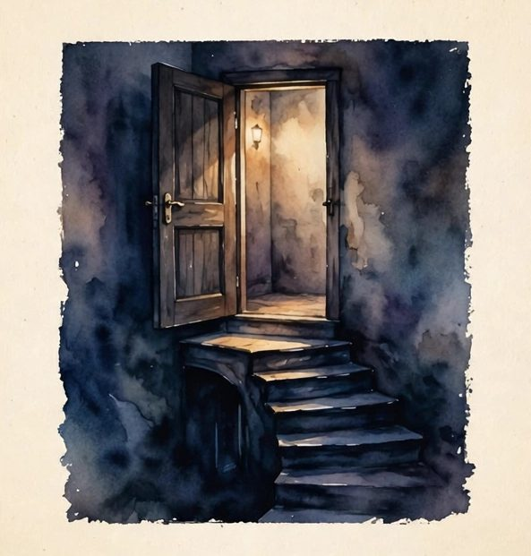
A door opening onto a dark stair descending, each step worn, the rail smooth from hands.
In the frightened telling, this is the life the corridor whispers about: the venture failed in public, the marriage failed in private, the name became a small cautionary tale told at other people's beginnings. All went wrong is the phrase visitors bring to the door, usually lowered in voice, as if the life behind it were asleep and might wake worse. The keeper's response is procedural and kind. She walks the visitor down two steps of the stair — two, no further — and asks them to report what is actually there, in the light that reaches that far. A summary is not a texture, and two steps are enough to prove it.
What the two steps contain is almost disappointing in its ordinariness. A morning, with its kettle and its weather. Work found again at a lower shelf and done, by the evidence, carefully. One friend — the register always finds at least one — who stayed through the tale's bad years and telephones on no schedule at all. The self down there keeps its small customs the way a lighthouse keeper keeps a lamp: the good cup, the walked route, the library book renewed. Things went wrong at the level of the headline. At the level of the hour, the life is a life, being lived forward at the standard rate, one unrepeatable day at a time.
They come back up the two steps slower than they went down, most of them. The feared life, seen from inside, is mostly an ordinary life whose sorrows stand nearer the front of the house — visible from the street, mistaken by passersby for the whole architecture. Bearable, the keeper says, is the word the corridor avoids and the stair teaches, and it is not a small word. It is the load-bearing word of every life in the register, the bright ones included, once their ladders and their baskets are honestly counted. The door closes. The rail keeps the polish of all the hands that have steadied themselves on it.
65The Life Where It All Came Easy
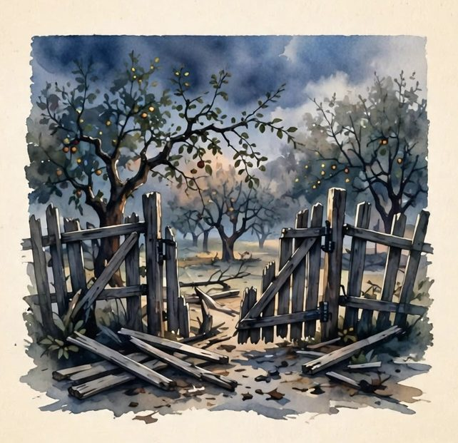
A broken fence and an orchard gate hanging open after a storm, the path beyond it clear.
You reach this door past a broken fence and an orchard gate left hanging open by a storm, and the keeper lets the approach stand as the room's first sentence: even the road to the easiest life in the house is littered with weather. Behind the gate, in the standard telling, everything came without the usual tolls. The talent was spotted early by the right eyes. The love arrived on time and stayed. Money behaved like a well-trained river, health like a good roof. The self in that universe has never once lain awake doing the arithmetic that the rest of the corridor does nightly. Visitors stand at this door the way they stand at the bright one, but quieter, because ease embarrasses envy into silence.
The register's report on the easy life is even-handed and therefore unsettling. It is pleasanter there; the house does not deal in consoling lies, and it records the pleasantness in full. It is also, in places, thinner. Certain muscles — gratitude of the deliberate kind, repair, the fierce tenderness that grows only where something was almost lost — hang unused in that climate, and its owner is occasionally found at the window envying, absurdly, lives with more weather in them: lives where things were earned and therefore known to be worth something. The keeper underlines this entry for visitors. Even ease generates its own remainder. The orchard behind the open gate is a real orchard. Its apples simply cost less, and are valued accordingly.
What the room leaves behind, when it works, is the discharge of a particular envy that many visitors did not know they were carrying: the envy of the untroubled, the assumption that somewhere a self is living the same life with the difficulty drained out of it. There is no such self in the house. There are only different distributions of weather — front-loaded, back-loaded, spread thin, gathered into storms — and the storm that broke this fence, the register notes, fell on the easy life too, and knocked its gate open, and nobody in that universe found the event philosophically interesting. They just fixed the fence, or didn't, and went on with the day.
66The Famous One
In one of the lives, the work found its crowd. The name is spoken by strangers in cities the self has never visited; the door of that house is opened by other hands, at other hours, and its step has been worn hollow in the middle by feet that came to admire, to ask, to be near the warmth of a reputation. The keeper brings visitors here in the middle of the tour, when their appetite for the bright doors has been a little educated, and she reports that the famous life answers questions in a different order than expected. The first thing it discusses, if a life can be said to discuss, is not the applause. It is the draft from the door that never fully closes.
The register is as even-handed about fame as about ease. It records the enlarged table: more voices at dinner, more letters answered, a wider field for the work to do its good in. And it records the shrunken one beside it: fewer evenings unobserved, a self that must be managed like a property, the slow discovery that being known by everyone and known by anyone are different estates. The hungers inside that life are the traveler's own hungers, unedited — the same appetite for quiet, for being off duty, for one room where the name is not currency. Fame, in the house's finding, changes the weather around a self. It does not change the self's climate, and it does not exempt the roof.
Visitors stop asking about this door sooner than they expect to. The keeper has a theory about that, which she shares at the desk: fame is the most imaginable of the other lives, because its scenery is public property, and therefore the one whose accounting disappoints the imagination fastest. An hour at its threshold teaches what an hour at the quiet doors teaches better — that the other self, however amplified, is still having Tuesdays. The step keeps its hollow. The lamp above the door burns for everyone alike, which is, the register notes dryly, precisely the problem the famous one would describe, if asked, in exactly those words.
67The Quiet One in a Far Country
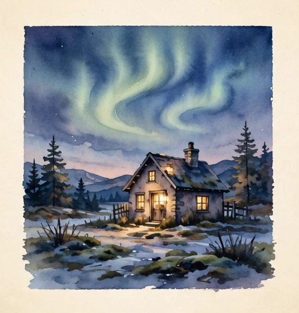
A small cottage under far northern light, in a long twilight that will not quite end.
At the far end of the hall, where the corridor's lamplight gives out, stands the door of the quiet life: a small cottage under northern light, in a twilight that lasts the whole evening and refuses, politely, to become night. In this universe the self left early — left the town, the family's trade, the expected century of local weather — learned a language with few words for hurry, and became the person the home town describes, at weddings, as the one who went north. The keeper keeps this door far from the bright ones on purpose. Its light does its own teaching, and it does not compete.
The quiet is not emptiness, and the register is specific about its contents. A garden kept against a short, intense summer, and kept well. One deep friendship conducted largely in silence and entirely in person. Work that fits in a satchel and a reputation that extends exactly as far as the valley and no further, which the self in that life counts among its principal assets. The costs are the mirror of the famous life's costs, precisely reversed: everything is near, and almost nobody knows. Letters take a season. The town's opinion, that great engine of the other lives, does not reach this far, and the silence where it should be is either freedom or exile, depending on the evening.
Visitors from loud lives stand longest at this door, and the keeper, who has learned not to interrupt weather, lets them stand. What they are measuring, she believes, is not the cottage but the difference between quiet and absence — between a life turned down like a lamp and a life that has gone out. The register records the northern self's own verdict, collected the way the house collects all its verdicts, over years: the twilight is long, the winters longer, and the person at the window would not trade the measure of their days for any door in the corridor. Including, on the evidence, the bright one two halls back, whose light they can see from here on clear evenings.
68The One Who Lost Everything Early
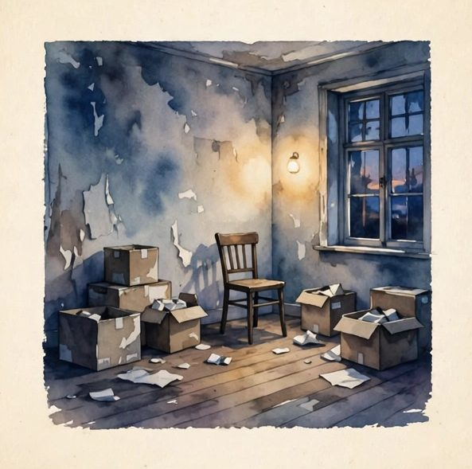
An emptied house with one chair remaining and boxes half packed by the door.
The door of this room opens on an emptied house. The sale, the fire, the collapse — the register keeps the causes in a separate column and the keeper declines to recite them — emptied it young, all at once, before the self had finished becoming whoever it was going to be. What is left in the front room is one chair and a row of boxes, half packed, taped in a hand that got steadier as the work went on. Visitors tend to lower their voices in this doorway more than at any other in the hall, including the dark stair. The keeper corrects them gently. The life behind this door is not asleep, and it is not a memorial. It is an address where someone still lives.
The register follows that life further than visitors expect, because the interesting part of the entry is not the loss. It is what grew in the cleared ground. In this telling — and the house warns that it is one telling among several, behind doors it does not open on tours — what grew was not bitterness but a particular, unmistakable freedom. A person with nothing left to protect walks through subsequent doors differently: lighter, harder to threaten, strangely generous with the little that returns, since return itself has stopped being assumed. The chair in the emptied room is not a symbol of deprivation. It is, the self in that life reportedly says, the chair that was actually needed, identified at last by elimination.
The keeper is careful at this threshold, and the care is doctrine, not decoration. The house does not call loss a gift, does not repack anyone's catastrophe as a blessing with better marketing. It records only what the evidence in this one life shows: that the self survived its own worst headline, kept its customs in reduced and therefore clarified form, and does not — this is the entry visitors ask to hear twice — does not experience its biography as a ruin with a person living in it. The boxes by the door are half packed because that life is still, like all the lives, in the middle of moving somewhere.
69The One Who Never Lost Anything
The twin of the emptied house stands across the corridor, and the pairing is the keeper's own design. In this room nothing was ever lost. The fortune stayed intact and compounded quietly. The parents lived long and died in the right order, at home, in their right minds. The plan drawn up in the schoolroom unfolded across fifty years without a tear in the paper. Every object in the room stands exactly where decades of habit put it, under a fine and even dust that no catastrophe has ever disturbed. Visitors enter expecting the happiest room in the house. The keeper watches them discover that it is not, and says nothing for a while.
It is not an unhappy room either, and the house is fair to it. But the self inside it is careful in a way the other selves are not — untested care, the keeper calls it, the vigilance of someone whose reserves have never once been drawn on and who therefore cannot know, as the emptied house knows in its bones, that the reserves exist. Shadows startle this self out of proportion. A delayed letter carries a weight of dread that the corridor's veterans would find hard to credit. Loss, the register notes without celebrating it, is also a teacher, and it has perfect attendance in every other life in the hall. The unlost life must find its lessons in smaller change, and sometimes goes looking for them with a hunger it cannot name.
The keeper pairs these two doors for the visitors who arrive certain that fortune is the whole difference between lives. The emptied house and the untouched room stand facing each other across the corridor, each incomprehensible to the other's logic, each inhabited by the same self in the same unedited core. What the pairing actually teaches is uncomfortable and useful: that a life's weather, good or catastrophic, does less to determine its inhabitant's peace than the corridor came believing. The dust in the quiet room lies even and undisturbed. The chair in the emptied house holds its sitter upright. The register declines to say which room it would choose, and the keeper has never once answered the question.
70Fright Is Information, Not Prophecy
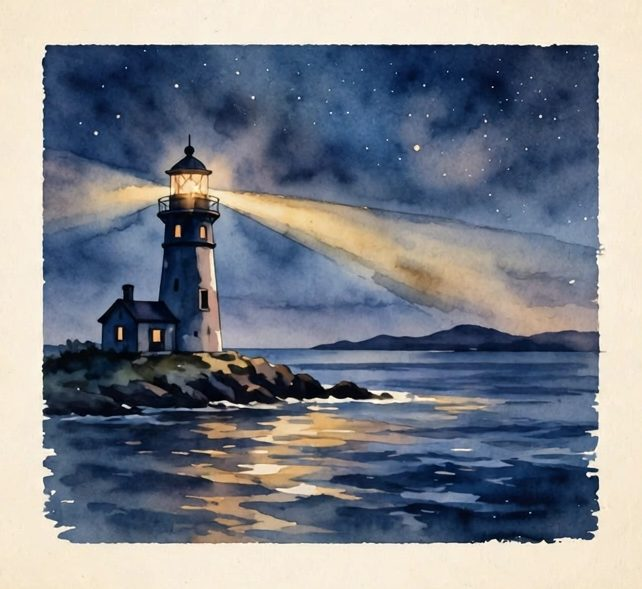
A lighthouse beam crossing a calm night sea, turning slowly, touching nothing.
Out beyond the last of the lives, the keeper keeps the hall's emblem where visitors will pass it on their way back: a lighthouse beam crossing a calm night sea, turning at its own unhurried pace. It does not promise any ship a harbor. It does not name the rocks, or shout, or take sides between the vessels. It gives position — the plainest and most useful gift there is — and it gives it to everyone on the water alike. The keeper uses the beam to open this room because fright, properly understood, works the same way, and because most visitors arrive at her desk having used it the other way for years: as an oracle, consulted in the dark, obeyed without minutes being kept.
A fright at a door tells you where you believe the rocks are. It does not chart them. The life behind the dark door is a country, not a forecast; the shiver at its threshold is data about the looker's map — about which losses their own biography has taught them to expect, which chapters they have been braced for since childhood. This is why the same door empties one visitor's face and leaves another merely thoughtful. The keeper enters frights in the register without embarrassment and without authority, in the column reserved for instruments: useful, fallible, to be checked against other instruments before any course is set by them.
Used this way, fright becomes one of the house's honest tools, and visitors are taught its handling the way one is taught any sharp instrument: noted, thanked, and set back on its shelf. Never obeyed as a prophecy, never mocked as a weakness. The beam completes its turn and comes around again over the calm water, indifferent and faithful, showing each ship where it is and leaving the steering, pointedly, to the ship. The keeper closes the hall's tour here most evenings. Behind the visitors, all the bright and dark doors stand in their pairs, and the frights they collected on the way stand in the register, in pencil, where provisional things belong.
71Beckoning Is Not a Summons
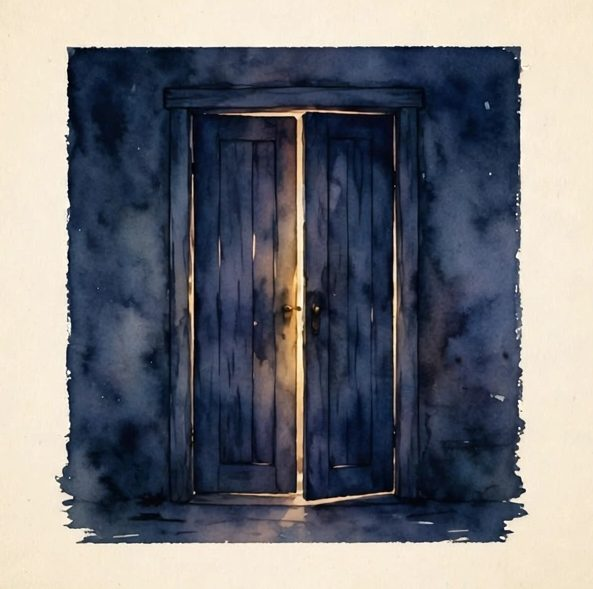
A door at dusk nearly shut, its warm light narrowed to a single bright line.
At dusk the brightest doors beckon hardest. Their light, narrowed by the closing day to a line under the door and a glow at the keyhole, finds visitors at the exact hour when the actual day has shown its seams — the bill unpaid, the letter unanswered, the ordinary self tired of being the only self on duty. The house posts its plainest notice beside such doors, in the keeper's own hand, and she makes every visitor read it before the corridor tour ends. It concerns a distinction the whole hall has been building toward: between a beckoning and a summons, which feel identical from inside a tired evening and are not the same thing at all.
A summons obliges. It has an authority behind it and a consequence in front of it, and it must be answered or consciously refused. A beckoning only invites the eyes. The life behind the line of light is not calling the visitor to abandon theirs; strictly speaking, it is not calling at all, since the self inside it is busy with its own evening and has never heard the visitor's name. The glow is the looker's own longing, projected on a door and mistaken for a signal from the other side. The keeper does not say this to shame the longing. She says it to return it to its right owner, in whose hands it is information, and in a door's supposed hands it is a tyranny.
The practice she teaches is unspectacular: let the door close to its line of light, and walk back down the corridor to the one door that stands open, which is the visitor's own. Longing, fully seen and correctly addressed, tends to quiet into information on the walk — and information, unlike a summons, can be acted on in small honest forms. The thing the bright life was pointing at is very often portable: one room of it, one habit of it, one unglamorous beginning. The register has a column for these carried-back beginnings. It is, by the keeper's own admission, the most hopeful column she keeps, and the least read by newcomers, who are still listening for trumpets.
72Look, Then Close the Door Gently
The hall ends the way the keeper ends every tour, in a corridor gone quiet: door after door closed for the night, none of them slammed, none of them locked against a future visit, the floor between them swept of the day's footprints. The frightening doors rest in their shadow. The beckoning ones have narrowed to their lines of light and then to nothing. It is the house's favorite hour, the keeper says, and also its whole curriculum in a single image. Everything the hall exists to teach is in the manner of those closings. Anybody can look. The house is interested in how a person stops looking.
Closing gently is a skill, and like most skills the house teaches, it is a sentence before it is a motion: I have seen this life as well as looking allows; I decline to live in the corridor between it and mine. The hand stays kind on the handle for a reason the keeper explains to visitors who slam — there are always a few — and then feel obscurely worse. The door will be passed again. Lives are not improved by being renounced in anger, and a self that must be cursed to be left alone has not been left alone at all; it has been given the best room in the visitor's head. Gentleness, here, is not softness. It is accuracy about what closing is for.
Visitors leave this hall, the register notes in its evening hand, with their shoulders lower than when they arrived. The frightening have been looked at and survived being looked at. The beckoning have been admired and released. And the actual life — the one door in the whole house that stands open, unglamorous lamplight and all — is waiting at the corridor's end without commentary, without comparison, in the plain expectation that the person coming toward it has finally finished touring other addresses for the night. The keeper follows last, as always, turning the lamps low one by one, in no universe but this one.
73Talking to the Other Self
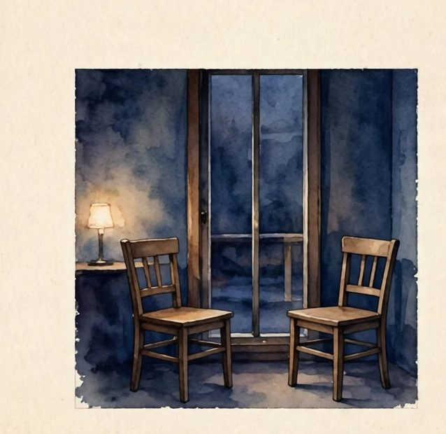
Two chairs facing each other across a tall pane of glass in a quiet room.
The interview room is the plainest room in the house: two chairs, a tall pane of glass between them, a rug that has heard everything and repeats nothing. When a visitor is ready — and the keeper judges readiness the way one judges weather, by signs rather than schedules — the other self takes the far chair, the way a reflection takes its place when a person steps to a mirror: near enough for conversation, separated by the one fact that no etiquette in the house is allowed to pretend away. The glass is not a wall. It is an honesty. Both parties can see perfectly. Neither can hand anything across.
Before any words are exchanged, the keeper sets the terms, and she sets them aloud, for both chairs. The other self is not an oracle, and is not to be interrogated like one. They are not a rival, and are not to be scored against like one. They are the visitor, with a different set of Tuesdays behind them and the same core in front. Questions asked in forgetfulness of this come back, in the keeper's long experience, with answers that bruise — not because the other self is cruel, but because a badly framed question manufactures its own injury and mails it across the glass.
Then the conversation is allowed to be what the house believes all such conversations secretly want to be: ordinary. Plain sentences, at a plain volume, about work and weather and who is at the table and what the winter cost. Visitors arrive rehearsing profundities and discover, usually within the first exchange, that profundity was a defense. The keeper withdraws once the talk is under way; the room has never needed her in it. She waits in the corridor with the register closed, listening to nothing, while on both sides of the glass the same person, twice, gets the rarest thing the house owns: an honest account of a road, given by the only witness who walked it.
74What You Would Ask First
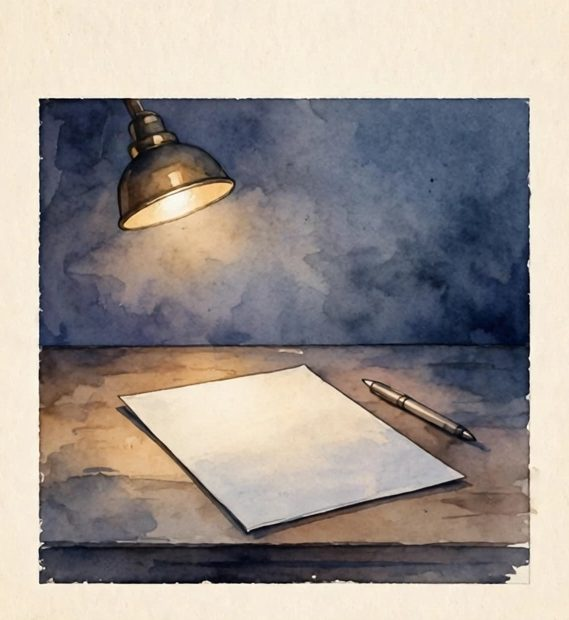
A blank sheet and a pen on a desk, the first question not yet written.
At the Crossroads Desk, in preparation for the interview room, a blank sheet is laid out with a pen across it, and the visitor is asked to write the first question. The sheet stays blank longer than anyone expects. The questions visitors arrive with are grand ones, rehearsed in the corridor like speeches: were you happy, out there — did it work — was it worth it. The keeper lets the blankness do its slow work. Grand questions, she has found, are usually requests for a verdict, and the other self is not a court. Asked for a verdict, the far chair can only become one, and the interview is over before it has begun.
Given time — the house is lavish with time in this one place — the first question changes. It shrinks from verdicts to particulars, the way a traveler stops asking whether a country is good and starts asking what its bread costs. What do your mornings look like, out there. Who is at your table these days. What did the winter cost, and who helped you carry it. The register's finding, across many years of first questions, is that the answers to the grand questions live inside the particular ones, the way the climate of a country lives inside its weather. Ask about the weather honestly and the climate introduces itself.
The keeper's own first question is never written on the sheet, because it is always the same, and she offers it to visitors who stall at the blankness: ask them what an ordinary day feels like from inside. Not the best day, which is a brochure, and not the worst, which is a headline, but the plain Tuesday of the other life, with its errands and its small change of light. The rest of the conversation, she promises, builds itself from there — and the sheet, filled at last in a hand less careful than the rehearsed one, goes into the register as evidence that the visitor has learned the house's first conversational skill, which is curiosity at the correct range.
75What You Would Warn Them About
Every visitor arrives at the interview room carrying a warning, folded small like a note passed in class: the illness whose first signs are easy to miss, the partner whose charm curdles, the year to brace against, the signature never to give in a hurry. It is hard-won news, bought at full price in this life, and it feels — the keeper watches it feel — like the one genuinely useful thing a person could carry across the glass. A gift of foreknowledge, offered in love, from the only person who has already paid for it. The note is unfolded, smoothed, and laid on the desk with great seriousness. Then the keeper asks the visitor to turn it over.
From the far chair, a warning looks different. The other self, it turns out, has a folded note of their own, and the two notes almost never agree, because each was written by a different road's weather. Worse — and the keeper is gentle with this, since it lands hard — a warning delivered from a life unlived may arrive the way prophecies arrive in the old stories: as a weight, not a map. Tell the far self to fear the year of the illness and you may only have taught their road to walk braced for a decade, guarding a door that their universe never planned to open. Foreknowledge is a drug with a dosage problem, and love is not exempt from the arithmetic.
What survives the turning-over is smaller and, the register insists, truer. Most warnings, given an hour at the desk, are re-written by their own authors into a portable form: not the event, but the lesson's handle. Rest earlier than feels necessary. Keep the letters; you will want them. Do not sign anything in anger, or in grief, or in the first week of good news. What crosses usefully between lives is rarely the headline. It is the habit that the headline taught, folded small, carried across in a steady hand, and left on the far side of the glass like a cup set down for someone who may or may not be thirsty.
The Crossroads Desk
One desk receives all correspondence for this house — questions, corrections, and word of any other life a visitor has been looking at: the door they wonder about, the split they keep returning to. It is read in the order it arrives, and entered in the register of other lives.
76What They Would Warn You About
A hand mirror and a small brass bell resting together on a desk.
On the keeper's desk, between the register and the lamp, rest two objects that visitors notice only when the interview turns: a hand mirror, face up, and a small brass bell. The bell is rung once, by the keeper, at the moment the conversation reverses — when the visitor stops asking and starts listening. It is the far chair's turn. The other self has a warning too, carried across their own road at their own price, and the etiquette of the house requires that it be heard with the same seriousness the visitor demanded for theirs. The mirror is there so that no one in the room is in any doubt about whose face the warning is being delivered to.
Their warnings, when they come, are seldom about danger. The far self has not usually survived anything the visitor has been spared; the roads differ more in weather than in peril. The warnings are about waste, and they arrive with an accuracy that the keeper describes, carefully, as uncomfortable. The years being spent guarding a door that is already open. The apology rehearsed for a decade for people who forgot the offense by spring. The talent kept in a drawer against a retirement that the keeper of the drawer may never choose to have. The far self delivers these in the visitor's own voice, which the register notes is the only voice such warnings are ever believed in.
The keeper records the warnings without endorsing them, because a warning from across the glass is a perspective and not an order, and the house's doctrines hold in both directions. But she keeps a private tally, which she shares with no one and which the register betrays in its margins: how often the other self's warning names, precisely, the thing the visitor already knew — had known for years — and had filed under later. The bell is put back on the desk. The mirror is turned, by long custom, face down. What the visitor does with the sentence they carried home is entered nowhere, because it happens, as it should, in the one universe where it can be acted on.
77The Letter Across the Glass
A sealed letter leaning against a tall mirror, its envelope blank but for a crease.
In the interview room, leaning against the tall mirror where it catches the light, stands a sealed letter. It is the room's one furnishing that the keeper will not explain to newcomers, because the explanation ruins it; the letter is for the conversations that cannot be held aloud. Some visitors find that speech across the glass keeps collapsing into argument or apology, the two failure modes of every important conversation. For them the house provides paper. A letter lets the writer be braver, because no face is watching the sentence form. It lets the reader be slower, because the sentence cannot be interrupted. Between two selves, the keeper finds, slowness is worth more than eloquence.
The house's letters are short by rule, and the rule is enforced at the desk with a ruler's literalness. They do not argue the case of one life against another; the glass is not a courtroom and the keeper is not a judge. They carry one true thing each — a thanks that has never been said in either universe, a fact the writer has only just admitted, a question left open deliberately, like a door. The writing is done in the visitor's own hand, in this life's ink, and the keeper seals the envelope without reading it. What crosses the glass in this house crosses in trust, or it does not cross at all.
What the other self writes back exists only in the visitor's imagining, and the house is scrupulously honest about that, here as everywhere. The letter across the glass is an imagined letter; the reply is an imagined reply; no courier serves the route. And yet the register's testimony on the practice is long and consistent: the exercise is the writing, and the writing is reply enough. A person who has stated, in one true page, what they would say to the road not taken has usually said the thing their own road was waiting to hear. The letter stays against the mirror, sealed, catching the light, addressed to the only correspondent whose answer the writer already, somewhere, knows.
78Envy, Examined at the Table
Envy is not confiscated at the door of this house. It is invited in, shown to the desk, and poured tea like any other visitor, which surprises people who expected the keeper to scold it or to pretend the corridor produces no such weather. She has no use for either performance. Envy arrives with most visitors, in some coat or other, and the house's method with every strong feeling is the same: seat it, let it cool a degree, and ask it — politely, and in the hearing of the register — what exactly it has come to say. Examined at the table, the keeper has found, envy almost always narrows. It is the unexamined kind that fills the whole room.
The narrowing is the room's real event. Pressed at the table, envy seldom turns out to want the whole other life. It wants one room of it. The unbroken health, and not the fame that bought the doctors. The applauded work, and not the decades of unwitnessed labor under it. The companion at the far table, and not the history that made the companionship possible — or bearable. Named at its actual dimensions, the haunting shrinks to something the heart can hold in one hand: a specific lack, in a specific shape, with a specific history of being unmet. The keeper watches visitors sit back at this point, tea in hand, looking faintly cheated of their own drama, and she counts that a good session.
What remains after the narrowing is information, the house's favorite residue. Under the envy, correctly read, sits a true want, stated at last in its real size — and a true want, unlike envy, can be carried home and used. It can be fed in this life, in smaller currency, beginning this week. The keeper enters such wants in the register under desires, not under verdicts, in the ink reserved for things that are allowed to change their owner. The teapot empties. The chairs are pushed back. Envy leaves by the door it came in, smaller than it arrived, which the keeper maintains is the only honest direction any visitor to this hall ever travels.
79Gratitude, Sent Across
A small parcel tied with string, set on a doorstep at morning, the string knotted twice.
On a doorstep in the morning — which doorstep, and in which universe, the keeper declines to specify — rests a small parcel tied with string, knotted twice against the journey. It is the plate for the room the corridor reaches last and remembers longest. Gratitude, the keeper teaches, is the one parcel the house guarantees will be delivered across the glass. Not because anyone on the far side signs for it — the house makes no such claim, here or anywhere — but because gratitude is the rare consignment whose delivery is completed in the sending. The hands that tie the string are the address it most reliably reaches.
The practice is conducted in both directions, and the second direction surprises visitors more. First, the sending out: thanks to the other life for carrying a version of the self through weather this road was spared — for enduring the winter, the war, the long illness of a parent, in a universe where those things fell elsewhere. Then, harder, the receiving: the visitor must imagine, honestly and in detail, the other self's gratitude arriving here. Thanks for the rooms this life kept that the far life never had. For the friend, the work, the ordinary unphotographed decade. The keeper watches people weep quietly at this exercise more than at any door in the hall, and the register records the fact without commentary, which is its way of underlining.
Set beside the hall's other couriers, gratitude's record is unblemished. Envy crosses the glass and corrodes what it touches. Advice crosses and tangles, arriving as interference in a life that has its own keeper. Warnings cross at their own risk, as the earlier rooms established. But gratitude arrives in the condition it was sent, improved if anything by the journey, because its whole content is an acknowledgment that travels unchanged: this was carried, and I know it, and it was not nothing. The parcel stays on the doorstep in the picture. The string stays knotted. The visitor goes home knowing how to tie one.
80What You Would Not Tell Them
A closed book with a ribbon marker resting on a night table, the lamp beside it unlit.
On the night table in the interview room rests a closed book, its ribbon marker set carefully where the reading stopped. The keeper places it there for the last conversation of the hall, because every honest conversation has its unwritten pages. Before the visitor leaves the far chair for the last time, the house asks them to decide — deliberately, not by default — what they will not carry across the glass. Not the lies; the house has no use for those in any case. The truths that stay home. Every visitor has at least one, and the keeper finds that naming it to oneself, precisely, is among the most clarifying acts the whole hall contains.
The keeper approves of the closed book, and her reasons are practical rather than delicate. Some knowledge belongs entirely to its own life. The ending of a story the other self is still inside, told early, would not arm them; it would narrow them, the way knowing the last page narrows a reader. The date in the margin. The thing that was forgiven and is therefore, by the rules of forgiveness, no longer available as cargo. Silence between lives, correctly used, is not secrecy and it is not shame. It is manners, of the deepest kind: the recognition that the far self is a person and not a branch office of one's own biography, entitled to their own unwritten pages too.
So the interview ends the way the book rests: closed, marked, at peace with its own unread remainder. The other self, the keeper suspects aloud exactly once per tour, has a closed book of their own on the far side of the glass, and the symmetry is the hall's last kindness — neither party leaves as the other's cautionary tale or oracle. What was said across the glass was said. What was not said remains in its own universe, in its own keeping, where it can do its own work. The visitor stands. The chair opposite empties the way reflections leave a mirror. The ribbon holds the page. The hall, for tonight, is done.
81The Meeting Place Is a Mirror
Every visitor eventually asks where the meeting with the other self would take place, as if the house kept a room for it with two chairs and a pot of tea. The keeper's answer is unvarying: there is no such room, and there never was. The meeting place is a mirror, and it stands where it has always stood, at the end of the corridor of doors, in the moment of looking. You do not travel to the other self. You stand still, and the glass does the rest, which is why the conversation so often disappoints the visitors who came hoping for a journey.
A mirror is an honest instrument for this particular meeting because it refuses the main pleasure of the fantasy, which is distance. In the fantasy, the other self is far away, in another city of the soul, and can be admired or pitied at a safe remove. In the glass there is no remove. The face that answers your questions has your timing, your evasions, your way of smiling a half-second late. Whatever they tell you across the glass, you will notice, arrives in your own voice — and the house regards that not as a failure of the meeting but as its whole information.
So the house counsels a particular etiquette for the mirror. Stand in front of it briefly and without theatre. Ask the question you actually brought, not the grand one prepared for effect. Listen for the answer in the first person, because that is the only person the glass speaks in. Then step away and let the corridor be a corridor again. The keeper has watched visitors spend whole afternoons negotiating with their reflections, and she is gentle about it, but the register is clear on the point: the mirror is a place to pass, not a place to live.
82Advice Neither of You Would Take
Two cups stand on a table by a window, one full and one empty.
On the table by the window stand two cups, one full and one empty, and the keeper sets them there for the visitors who arrive full of advice for their other selves. The advice is always excellent. Tell the other self to keep the letters, take the posting, refuse the loan, leave earlier, stay longer. It pours out easily, the way advice does when the adviser's own life is not the one at stake. The full cup is yours. The empty one belongs to the person who would have to drink it, in a life whose weather you have only visited in imagination.
The house has run the experiment in the other direction often enough to report the result. Whatever you would tell them, they would tell you, nearly word for word, from the far side of their own window. Keep the letters. Take the posting. Refuse the loan. The symmetry is not a coincidence and it is not a joke. It means the advice was never really about the other life at all. It is a list of the things you already believe and have not done, wearing the costume of a message to someone else, and the costume is the only part of it that is new.
Neither of you would take it, and the keeper asks visitors to sit with that fact without self-contempt. Advice fails to cross between lives for the same reason it fails between people: it arrives without the fear, the tiredness, and the local knowledge that made the original decision reasonable at the time. What crosses instead is smaller and more useful. Not instructions, but recognition — the discovery that your values packed their bags and travelled with you into every universe, and are standing in the other kitchen now, giving the same advice to the other self, who is also, politely, not taking it.
83Forgiving the Other Roads
An open gate stands between two gardens at evening, each garden kept in its own way.
Between two gardens at evening stands an open gate, and the keeper keeps it oiled for the visitors who arrive carrying an unexpected item: not envy of the other roads, but anger at them. Anger that the road not taken exists at all, anger at the younger self who stood at the split and chose as they chose, anger at chance for dealing the hand it dealt. The house treats this anger as a real exhibit and a heavy one. It is set down in this room, beside the gate, because this is the room where the other roads are forgiven.
Forgiveness, in the house's plain usage, is not a ceremony and not a feeling that can be ordered up. It is a correction of the record. The other roads were never promises, so they cannot be betrayals. The younger self was never a saboteur, only a person deciding with the information, courage, and weather available on that particular day. Chance was never an enemy with a grudge; it was only chance. When the record is corrected, the anger loses its address. It does not vanish dramatically. It simply stops being delivered, door after door, to houses where nobody owes it anything.
What visitors do with the forgiven roads varies, and the house allows all of it. Some close them with genuine peace. Some leave the gate open between the gardens and find they can look across without the old tightening in the chest. The keeper notes only that the two gardens, seen at evening with the gate open, do not compete. Each is kept in its own way, each has its weeds and its roses, and neither was planted to spite the other. Forgiving the other roads turns out, mostly, to be forgiving the gardener, who was also, in every universe, you.
84Parting Without Taking Anything
The seventh hall ends at a doorway standing empty at dusk, and it ends there deliberately, because the last skill the hall teaches is parting. Every visit to the other lives concludes, and the house is particular about how conclusions are made. You take nothing. Not a grievance to nurse, not a trophy to display, not a borrowed ambition smuggled home in a coat pocket, not even a photograph of the other kitchen to sigh over on difficult evenings. The doorway is kept empty so that visitors notice what their hands are carrying, and set down whatever is not theirs.
This strictness surprises people, who point out, reasonably, that the whole house encourages looking. It does, and the looking is the entire transaction. A visitor who tries to carry something out has misunderstood the geometry of the doors: nothing material crosses, in either direction, and that is not a limitation of the house but its foundation. The other lives cannot be looted for parts. The actual life cannot be improved with stolen furniture. Whatever changes on the way out changes inside the visitor, quietly, and needs no luggage allowance at all.
Parting well has a sound, in this house, and the sound is ordinary. A door closing at its normal weight. Footsteps in a corridor, unhurried. The keeper's pen entering the visit in the register in the same hand as all the others. Visitors who part without taking anything report, almost sheepishly, that they feel lighter than arrivals who clutched something — because what they did not take cannot be lost, taxed, or regretted later. They leave with empty hands and full attention, and of the two, the house has always maintained, only the second was ever the point of the visit.
85What Crosses Over
A doorway is lit from both sides, its threshold standing in the middle.
The eighth hall opens on a doorway lit from both sides, its threshold standing in the middle, belonging to neither room and serving both. The keeper chose this door to open the hall because the hall asks the house's most practical question: after all the looking, what crosses over. Not what is felt in the moment of standing in another life's kitchen — feelings are weather, and the house does not build on weather. What crosses, in the durable sense. What arrives home with the visitor and is still there at breakfast, when the doors are shut and the corridor is only a corridor again.
The register's answer, gathered over years of visitors, is shorter than most of them hoped and more useful than most of them feared. Attention crosses. Tenderness crosses. A repricing of ambition, a widening of sympathy, a small honest grief correctly sized — these cross. What does not cross is equally well documented. No instructions cross, no second chances, no cargo of regret to be unpacked nightly, no deed to any other life. The threshold is narrow on purpose. It admits a person and their changed way of seeing, and it has never once admitted furniture, verdicts, or excuses.
The hall walks the short list slowly, room by room, because each item on it is easy to claim and harder to keep. Attention, for instance, fades by Thursday if it is not spent on something particular. Tenderness curdles into sentimentality if it is never given a task. So the keeper treats the crossing as a calm customs post: everything declared, everything examined in plain light, nothing waved through on charm. What crosses over, in the end, is exactly what the visitor is willing to carry openly into the actual life and use there, in daylight, at ordinary scale.
86The Looking Changes the Looker
One pane of a window has been wiped clean, and the view stands brighter through it than through the rest.
One pane of the window has been wiped clean, and the view through it stands brighter than through the rest, and the keeper is fond of pointing out that the garden has not been improved. The roses were not repainted. The weather was not consulted. A hand with a cloth passed over one square of glass, and the same world came through it differently. This room is about that pane, because the first thing that crosses back from the other lives is exactly this: not a changed life, but a cleared square of glass in the person who did the looking.
It is worth being precise about the mechanism, because visitors sometimes describe the change as inspiration, and the house distrusts the word. Nothing inspired happens. A person stands in an imagined doorway and sees their own assumptions from outside for once — sees that the split they called a fate was a Tuesday, that the road they call inevitable was a habit, that the life they call ordinary contains rooms other lives would envy. None of this adds information. It rearranges the light on information already owned, which is why it feels both startling and faintly embarrassing, like hearing one's own voice recorded.
The cleared pane does not stay cleared by itself, and the keeper says so in this room before visitors can discover it unkindly. Glass mists. Attention drifts back to its old angles, and the bright square dims toward the common level of the rest. The house regards this not as backsliding but as the ordinary maintenance of sight, no more shameful than the dusting of any other window. What matters is that the visitor now knows the difference the cloth makes, and where the cloth is kept, and that the garden on the other side was worth looking at all along.
87A Wider Sympathy for Strangers
Along a street at dusk runs a row of strangers' doors, each lit in its own colour, and the keeper walks visitors past it slowly on their way through this room. The room's claim is simple. A person who has stood in the doorways of their own unlived lives cannot look at a stranger in quite the old way again. Every stranger at the next desk, in the next carriage, behind the next counter, is also one road of many — also the outcome of splits they did not choose and choices they did, also keeping a private hall of doors they sometimes stand in at night.
This sympathy is not softness, and the house is careful with the distinction. It does not excuse anyone anything. It corrects a specific error: the error of treating other people's lives as single, simple, and fully intended, while experiencing one's own as branching, accidental, and half-unfinished. They are all branching. The colleague whose career looks like a straight line is standing in the middle of his own thicket of missed trains and answered letters, and would find your life, from his side of the glass, enviably coherent. Nobody's road looks like a road from inside it. From inside, it looks like weather.
What the widened sympathy does, in practice, is small and concrete, and the register records it in small concrete entries. A slower judgment of the neighbour whose choices bewilder you. A pause before envying the acquaintance whose door is lit the brightest on the street. A genuine question, asked of an old friend, about the road they did not take — and then the rarer discipline of actually listening to the answer. The house does not call any of this virtue. It calls it accuracy. Strangers were always this complicated. The other lives simply taught the visitor to see the complication that was there.
88Your Own Life, Seen From the Doorway
A familiar ordinary room is seen from its own doorway, its lamps and chairs arranged as if for a guest.
The keeper asks visitors to perform a small experiment in this room, and the apparatus is nothing but a doorway — the doorway of their own most ordinary room, seen from the threshold as if they had just arrived. The chairs stand where they always stand. The lamp is the lamp. And yet, seen from the doorway, the room declares something it never says from inside: that it was arranged, over years, by a person with particular loves and particular tirednesses, and that nearly everything in it was, at some point, chosen or at least allowed to stay.
This is the view the other lives have of your life, and it is worth borrowing their eyes for it. From the doorway of the life where the other choice was made, your rooms do not look like the residue of a compromise. They look like a country. There are arrangements in them that the other self, standing in your doorway with their coat still on, would study the way you studied theirs — not with the slack envy visitors imagine, but with the sharp curiosity of a person reading a map of a coastline they will never sail. The doorway view cuts both ways, and it is supposed to.
What visitors take from this room varies less than they expect. Mostly, it is a sentence, and the keeper has heard it in many handwritings in the register: I had stopped seeing it. The room had become the place where life happens rather than a thing life made. Standing in the doorway restores it — the kettle's position, the scar on the table, the chair nobody sits in that nobody will throw out. None of it is grand, and that is precisely the restoration. The actual life, seen from its own doorway, stops auditioning against the other lives and simply stands there, furnished, inhabited, and unmistakably somebody's.
89Tenderness for the Actual
A cup of tea steams on a windowsill in the morning light.
On the windowsill in the morning light stands a cup of tea, steaming, entirely ordinary, and the keeper sets it as this room's whole argument. Tenderness for the actual is not a verdict that the actual life is the best of the lives, or the worst forgiven, or any ranking at all. It is a manner of handling. The cup is warm, so the hand is careful. The morning is the actual morning, so it is met as it is rather than as a draft of some other universe's morning. Tenderness begins, in the house's teaching, exactly there: in the temperature of what is actually in your hands.
Visitors sometimes mistake this for settling, and the keeper corrects them with some firmness. Tenderness is not approval, and it is not resignation. A gardener can be tender toward a garden she fully intends to dig up and replant; the tenderness is in the digging, not in leaving the weeds. What tenderness refuses is contempt — the particular contempt people learn to aim at their own lives after standing too long in other doorways, speaking of their actual days as if they were a clerical error. The house forbids that tone in these rooms. It has never once improved a garden.
In practice, the register finds, tenderness is almost embarrassingly small-scale. It is the actual breakfast eaten sitting down. It is the actual friend telephoned instead of the imaginary audience addressed. It is maintenance done without resentment on a life that is, whatever its ranking among universes, the only one whose kettle is on. The other lives receive many grand emotions in this house — envy, grief, wonder, relief. The actual life, the keeper notes, mostly asks for smaller ones, offered daily: care, patience, and a hand that does not flinch from the ordinary warmth of what is already here.
90The Splits Stop Looking Like Verdicts
In an old path there is a fork, both of its ways worn equally by years of feet, and nobody standing at it now could say which way was the right one, because the wearing went on impartially, year after year. This room is about the day a visitor's own splits stop looking like verdicts. Early in a visit to the other lives, every split gleams with false significance: the letter, the train, the city, the day everything was decided. It feels like standing in a courtroom of one's own biography, with all the evidence polished. The feeling is vivid, common, and — the house says gently — mostly an artifact of hindsight.
A verdict requires a judge, a law, and a sentence, and the longer a visitor looks, the harder all three are to find. There was no law stating which train a life must take. There is no sentence being served in the actual life; there is only a life, being lived, with its own weather. What hindsight calls a verdict is usually just a turning, and turnings are what paths do. Both ways at the fork are worn because both ways were walked, by someone, into perfectly real countries. The road not taken did not lead to the capital of happiness. It led somewhere, with its own winters.
When the verdicts dissolve, visitors often describe an unexpected quiet, as if a long trial had adjourned. The split remains a fact — the letter was answered, the train was missed — but facts are lighter to carry than judgments. A fact can be set on the shelf of the register. A judgment follows its owner from room to room, commenting. The keeper does not promise that the quiet arrives on schedule; some splits keep their courtroom echo for years. But the house's whole geography is arranged to teach the difference, door by door, until a turning looks like what it always was: a turning.
The Crossroads Desk
One desk receives all correspondence for this house — questions, corrections, and word of any other life a visitor has been looking at: the door they wonder about, the split they keep returning to. It is read in the order it arrives, and entered in the register of other lives.
91Ambition, Repriced
A plain blank tag is tied to a key on a hook, its price left unwritten.
On a hook hangs a key with a plain blank tag tied to it, the price left unwritten, and the keeper uses it to open the subject of this room: ambition, which every visitor brings into the house and few bring out at the same valuation. Standing in the other lives has a repricing effect that no lecture achieves. The visitor has now seen the famous one tired, the rich one lonely in a specific and unglamorous way, the one who risked it all paying the interest on the risk. The ambitions do not vanish. They return to the desk with their tags in hand, asking to be written again, more honestly.
Repriced is not reduced, and the house is insistent on the point, because visitors arrive ready to perform a little ceremony of renunciation and the keeper will not officiate. Some ambitions come back from the doors more expensive than before, having been confirmed as the real thing — the work itself, loved in every universe, at every income. Some come back cheaper, exposed as borrowed scenery: the title wanted for the telling of it, the city wanted for the photographs. And some are simply re-denominated, converted from the currency of arrival into the currency of mornings, which is the only currency the actual life accepts.
The blank tag is the keeper's whole policy in one object. The house does not price a visitor's ambitions, high or low, and it does not applaud the repricing, which is a private transaction between a person and their own register. It only insists that the writing on the tag be in the visitor's hand, dated today, and done after looking — not before, in the old ink of other people's expectations. Ambition survives the other lives remarkably well, the register finds. What rarely survives is ambition's costume: the borrowed urgency, the borrowed audience, the borrowed definition of enough.
92Grief for Roads, Kept Small and Honest
A single flower stands in a jar on the desk, fresh and unaccompanied.
On the desk stands a single flower in a jar, fresh and unaccompanied, and the keeper chose the singleness of it carefully for this room, which is about grief. There is real grief for the roads not taken, and the house, which refuses so many counterfeit emotions, does not refuse this one. A person can genuinely mourn the children of a life they did not live, the city they will never be homesick for, the self who would have known how to do the things this self does badly. The grief is not an error in the looking. Sometimes it is the looking's most honest product.
What the house regulates is not the grief but its size and its honesty, and the two turn out to be the same regulation. Grief kept honest stays the size of its object: a road, a version, a handful of imagined mornings. Grief allowed to grow theatrical changes its object without announcing the change — it stops mourning the road and starts indicting the whole actual life, which is a different proceeding and an unjust one. The keeper's image for the discipline is the jar on the desk. One flower, fresh water, a defined place. Not a bouquet of grievances rearranged daily, and never a wreath laid on the actual life's door.
Visitors ask, reasonably, what the grief is for, if it buys nothing and changes nothing. The house's answer is that it is the tax on having imagined honestly, and like most honest taxes it is not wasted. It proves the other lives were looked at with the heart as well as the eyes. It keeps the register truthful — a hall of doors with no grief in it would be a hall nobody had really entered. And it passes, which the inflated kind, fed daily on grievance, conspicuously does not. Small and honest, grief visits this room like weather, is entered in the book, and leaves the desk clear for the flower to be changed.
93Nothing Crosses Back But Attention
At dawn the threshold lies swept clean, with nothing left standing upon it, and this room states the house's central law in its baldest form: nothing crosses back but attention. Not the other life's courage, which belongs to its circumstances. Not its luck, which was never a substance. Not its people, its cities, its mornings, its version of you — all of it stays on its own side of the glass, in the keeping of imagination, which is a faithful keeper precisely because it hands nothing over. The visitor returns exactly as laden as they left, which is to say carrying the one thing that was theirs all along.
Attention sounds like a modest cargo, and visitors have been known to look disappointed at the customs table of this room, as if the house had promised smuggled gold. The keeper's reply is to ask what they imagine attention is. It is the whole of seeing. It decides what a life's rooms look like from inside them, which details are entered in the register and which are lost, whether the actual morning is met or merely endured. A visitor who crosses back with their attention altered has not brought home a souvenir of the other lives. They have brought home a different instrument for living this one, which is the only instrument there is.
Everything else the visitor might try to carry is gently confiscated by the geometry of the doors, and the register lists the confiscations without judgment: resolutions copied from the other self's circumstances, which do not fit these; grievances against chance, which were contraband from the start; a borrowed certainty about which road was best, which no honest looking ever produced. What survives inspection is always the same small declared item, carried openly. Attention, the keeper writes, is not the least of what crosses between the lives. Examined closely, it is the only thing that ever did, and it is enough to rebuild a seeing life upon.
94The Other Lives Make This One Larger
A path from a hall of doors leads back to one lit house, standing quiet in the dusk.
A path from the hall of doors leads back to one lit house, and the keeper likes visitors to notice the paradox waiting at the end of it: the house you return to is the same house, and it is larger. Nothing was built on. No rooms were added in your absence, no inheritance arrived from another universe. And yet the visitor crossing the familiar threshold has the distinct, unarguable sensation of more space — as if the walls had been politely moved outward in the night by a hand that left no other evidence of itself.
The largeness is real, and the house can account for it precisely. A life lived without reference to its alternatives is experienced as a corridor: one door, used daily, its walls unquestioned. A life seen from the hall of doors is experienced as a house among houses, chosen at a crossroads, standing in a landscape of possibilities that did not happen and therefore cannot threaten it. The actual life gains the dignity of the particular. It stops being the default and becomes the instance — this road, these people, this weather — and particulars, the keeper notes, always feel larger than defaults, the way a named street feels larger than an unnamed one.
There is a second accounting, quieter than the first. The other lives, looked at honestly, return a great deal of borrowed fear. Visitors arrive believing their actual life is fragile in ways the alternatives were not — that somewhere a sturdier self is living the robust edition. They leave having seen every edition's fragility, differently distributed. What remains is not confidence, exactly. It is proportion. The lit house at the end of the path is not larger because the others were small. It is larger because it is now seen whole, in a landscape, with its windows lit from inside — and a thing seen whole always takes up more room in the mind than a thing merely inhabited.
95No Refuge Is Offered Here
A shut door stands in the evening with a lamp beside it, lit for the road home.
In the evening stands a shut door with a lamp beside it, and the lamp is not lit for anyone entering. It is lit for the road home. This room delivers the house's firmest refusal, and the keeper delivers it without apology: no refuge is offered here. The hall of doors is not a shelter from the actual life, not a waiting room where a disappointing existence can be sat out among brighter alternatives, and not a country in which citizenship can be transferred. Visitors who come looking for refuge find the doors exactly as hospitable as mirrors, and for the same reason: they show, they do not house.
This refusal is sometimes mistaken for coldness, and the keeper spends some of her plainest sentences correcting the mistake. A refuge that worked would be a catastrophe for its residents. To live mentally in the other life is to become a ghost in two universes at once — absent from the actual one's breakfasts and arguments, unwelcome, eventually, in the imagined one's, which was never built to bear the weight of being lived in by a refugee. Imagination is a house for visiting. The moment a visitor tries to move in, the rooms go thin, the way scenery does when you walk behind it.
What the house offers instead of refuge is more modest and, the register insists, more durable: a lamp by the door for the road home, and the road itself improved by the walking. The visitor returns to the actual life not because the doors failed to tempt them but because the temptation was examined honestly and priced correctly. Refuge says: stay, it is better here, at no cost. The house says: look, it is interesting here, at the true cost, and then go home and make the tea. Of the two invitations, only the second has ever sent a visitor back larger than they came.
96What Crosses Over Is Yours to Keep
Beside a door there is a small shelf holding one kept thing, alone in the last of the light, and the eighth hall closes here, on the question of ownership. What crosses over from the other lives — the attention, the tenderness, the repriced ambitions, the correctly sized grief — is, the house states flatly, yours to keep. Not on loan from the keeper. Not returnable at the Crossroads Desk. Not a technique to be maintained by subscription to further looking. It crossed, and in crossing it changed its nature: it stopped being an exhibit in the hall of doors and became part of the furniture of the actual life.
This is worth stating plainly because visitors persist in treating what they carry out as fragile in a legal sense, as if it might be reclaimed if they fail to use it correctly. The register contains no reclaims. A widened sympathy does not lapse for want of practice, though it may rust. A repriced ambition does not revert when the visitor stops thinking about doors. The crossing is a one-way gift with no conditions, and the keeper suspects this is precisely why some visitors clutch it so anxiously at the threshold. They are used to houses where everything is metered. This one meters nothing except honesty at the door.
So the hall's last instruction is hardly an instruction at all: keep it the way you keep anything that is yours — unceremoniously, in daily use, without either displaying it or hiding it. The shelf by the door is small because what crosses was never bulky. It holds one thing at a time in the light, and there is room, the keeper notes, for the whole short list, since attention takes up no space at all and tenderness only the space of a hand. The visitor closes the hall behind them and crosses the corridor toward the practical rooms, where the house, in its final manner, becomes a set of steps.
97Step One: Name the Door You Wonder About
One door among many bears a plain ribbon tied to its handle.
The practical hall begins with an act of naming, and it begins there because unnamed longing is the raw material of every misuse of this house. One door among many bears a plain ribbon tied to its handle, and the first step is simply to tie it. Not the ten doors you might idly survey, not the whole corridor of what-ifs a restless mind generates before breakfast — the one door. The one you return to. The life whose kitchen you find yourself standing in, uninvited, while your own kettle boils. Name it as precisely as the register demands: the door of the city refused, the door of the letter answered.
Precision is the entire discipline of the step, and visitors underestimate it at their cost. A vague door produces vague looking, and vague looking produces the fog in which envy and self-contempt grow like mould. A named door, by contrast, can be examined. It has a specific split behind it, a specific cast, a specific price list, and it usually turns out — this is the step's quiet reward — to be considerably less magical than its unnamed version. Most doors, once named, shrink to human size. The ones that do not shrink are the ones worth the remaining eleven steps, and there are never as many of those as the corridor threatened.
The keeper enters the named door in the register exactly as given, in the visitor's own words, without improving the grammar of the longing. She has refused, over the years, to rename a single one, because the naming is the visitor's first honest act in the house and it must not be edited by staff. Then the ribbon is tied — a plain one, the house keeps no silk — and the visit can begin in earnest. Everything after this step is procedure. This step is the decision to have a procedure at all, instead of a haunting.
98Step Two: Find the Split, Not the Fantasy
A fork in a path is marked by two plain stones, one on either way.
A fork in the path is marked by two plain stones, one set on either way, and the second step is to walk back to it. Behind every named door stands a split — a year, a letter, a train, a sentence said or unsaid — and the step requires the visitor to find the actual one, in the actual past, with a date or something near a date. This is less easy than it sounds. Memory prefers to hang its doors on dramatic hinges, and many visitors arrive reporting splits of operatic size that dissolve, on inspection, into a slow drift nobody chose on any particular Tuesday.
The fantasy is what the step forbids, and it is worth defining the forbidden thing exactly. A fantasy of a split is a story in which the other life began cleanly, at a moment of perfect freedom, with the chooser fully informed and the roads lit like runways. Real splits are nothing like this. They are muddy, half-conscious, compounded of weather and money and other people's timetables, and a fair share of them were not choices at all. Finding the real split — muddy, dated, partly accidental — is what keeps the rest of the exercise honest, because a life that branched at a real fork can be examined, and a life that branched in a fantasy can only be worshipped.
The keeper's test for a found split is practical: it should embarrass the mythology a little. If the story of the road not taken still sounds like the opening of an epic, the stones have not yet been found. When they are found — the ordinary afternoon, the form signed or not signed, the perfectly human mixture of reasons — visitors often laugh, and the laugh is entered in the register without comment, because it marks the exact moment the other life stops being a shrine and becomes a subject. Two plain stones. One ordinary fork. The whole apparatus of the house stands on nothing grander.
99Step Three: Walk the Other Road One Ordinary Day
The third step is a walk, and its destination is deliberately unglamorous: one ordinary day in the other life, walked hour by hour, at street level. An ordinary morning street in an unfamiliar town lies quiet, its shops just opening, and the visitor is to begin there — not at the other life's triumphs, which the imagination keeps in a lit window, but at its breakfast, its commute, its shopping, its weather. The step is the house's main instrument against fantasy, because fantasy is a highlight reel, and a whole ordinary day, honestly walked, cannot be edited into one.
The keeper's instructions for the walk are specific enough to be almost rude. The visitor must give the other day its frictions: the colleague who is difficult there too, the bill that arrives there too, the knee, the rain, the meeting that wastes the afternoon in any universe. They must let the other self be tired by evening in the ordinary way, and notice what the day did not contain — the people this life has that that one lacks, who by evening are missed with a precision that surprises most walkers. A day that costs nothing to walk was not walked. It was brochure-read, and the register can tell the difference at a glance.
Very few other lives survive this step unchanged, and the keeper is careful to say that survival is not the test. Some lives, walked honestly for one ordinary day, emerge smaller — their shine was altitude, and at street level they are streets. Some emerge larger, their goods proving to be the durable kind that a weekday can hold. Either result is information, and information is what the step is for. What never survives is the comparison the visitor arrived with, because that comparison was between their own whole life and another life's window display, and the walk has now put a whole day against a whole day.
100Step Four: Count What It Costs, in People
A long table stands set for a meal, with many empty chairs around it.
A long table stands set for a meal, with many empty chairs around it, and the fourth step is taken seated at it, counting. Every life is paid for, the house's doctrine says, and the currency is people — the specific, irreplaceable people each road gathers and each road forgoes. The step requires the visitor to count the other life's price in this currency, aloud, by name where names exist. Who is not at that table because the other road was taken. Who was never met, never married, never born, never forgiven in time. The chairs are empty for counting purposes, and the counting is the step.
Then — and the keeper enforces the second half of the step with unusual strictness — the visitor turns the count around. This life's table is set in the mind beside the other one, and its chairs are counted too: the people who exist here precisely because this road was taken, whose absence from the other table the visitor had somehow failed to enter as a cost of that life. The exercise usually goes quiet at this point, and the quiet is data. Costs are not symmetrical, the house has always said, but they are always bilateral, and a count that only runs in one direction is not accounting. It is advertising.
The step forbids one conclusion outright, and the prohibition is printed nowhere because the keeper delivers it personally: the count is not a verdict. It does not prove this life cheaper, better, or more blessed. Tables are not scores. The count exists to make the price of the other life real — denominated in faces rather than in the weightless currency of might-have-been — because only real prices can be honestly weighed, and only honestly weighed prices stop haunting the register. When the chairs have been counted on both sides, the visitor stands up from the table with something rarer than certainty: an actual bill, for an actual road, that they can finally read.
101Step Five: Look for the Same Self There
A single chair stands in a hall, with the doors ranged beyond it.
A single chair stands in the hall with the doors ranged beyond it, and the fifth step is to sit in it, figuratively, and perform the exercise the whole house exists to make possible: arrive in the other life, and look for the same self there. Not the resume — the resume is different in every universe, and the house is not interested in it. Look for the temperament under the circumstances. The laugh, arriving on schedule. The particular flaw, wearing local dress but recognisably itself. The hunger that no universe has yet managed to feed or cure. The visitor who finds nothing of themselves in the other life has not looked; they have only toured.
The finding, when it comes, is usually double, and both halves matter. The first half is relief of an oddly durable kind: the self is more portable than feared, and its portability means the actual life's disappointments cannot all be charged to geography. You would have brought your weather with you. The second half is sterner. Whatever most needs changing in the visitor turns out, in universe after universe, to have a ticket for the journey — which retires, once and for all, the hope that the right road would have edited it out. The other lives offer many things. An edited self is not among them.
The keeper regards this step as the hinge of the twelve, and the register's margins support her. Visitors who complete it stop asking the house its most common question — which life is the real me — because the looking has answered it: all of them, in local dress, and none of them completely. What remains is the smaller and better question the step leaves in the chair when the visitor stands up: given that the same self travels everywhere, what is this self, here, in this life, going to do with the one road it actually has. The hall goes quiet around that question. It is supposed to.
102Step Six: Ask What It Envies in Yours
From a window in another house, the view runs back across the dusk toward one lit window of home, and the sixth step stands at that window and reverses the direction of the whole exercise. Until now the visitor has done the looking, the envying, the counting. The step asks them to complete the symmetry: to stand in the other life, with its goods arranged around them and its costs itemised on the table, and ask what it envies in yours. The question is not a trick and not a consolation exercise. It is a request for information that only the far side of the glass can supply.
The answers, when visitors manage them honestly, are remarkably consistent in kind and remarkably specific in detail. The other life envies people, first and almost always — not abstractions, but particular faces this life gathered by roads the other one never travelled. It envies rooms that took decades to become themselves. It envies accidents: the chance meeting, the lucky scar, the unplanned loyalty. What it almost never envies is the things the visitor arrived envying in reverse — the titles, the lit windows of other people's summaries. Seen from the far side, a life's wealth is located almost entirely in its unreproducible particulars.
The keeper insists on one discipline for this step: the answer must be allowed to be unwelcome. Some visitors discover that the other life, examined honestly, envies nothing in theirs that they themselves value, and covets instead the very things they have spent years apologising for. Others find the envy running in a direction that rearranges their whole accounting. Either result is the step working. What is forbidden is the staged answer — the visitor scripting the other self to praise exactly what the exercise was supposed to make them feel better about. The glass is not a mirror for compliments. It is a window, and windows are for seeing through, in both directions.
103Step Seven: Let the Dark Door Be Information
A door painted deep dark blue stands in shadow, its handle worn bright.
A door painted deep dark blue stands in shadow, its handle worn bright by the hands of visitors who came this far and hesitated, and the seventh step is to open it — briefly, and for a stated purpose. Behind it stands the darker other life: the one where the illness came early, the venture failed in public, the person was lost. Every visitor's corridor has such a door, and the step does not permit the polite fiction of walking past it whistling. It requires a look, of a specific kind: the dark door is to be treated as information, and as nothing else whatsoever.
Information of three kinds is what the looking yields, and the keeper lists them in the register for visitors who emerge shaken. First: the shape of what you actually fear, which is rarely what you said you feared in the daylight of the earlier halls. Second: an honest inventory of what luck, not merit, has so far kept from your door — an inventory that tends to reprice pride more thoroughly than any success re-prices humility. Third: the discovered fact, unwelcome and steadying, that the self in the dark life is also recognisably you, coping in the local manner, neither ennobled nor erased by the darkness. None of this is prophecy. The door shows a possibility, not a schedule.
The step ends, as all visits to that door must, with a deliberate closing and a return to the lit corridor, and the keeper is exact about the etiquette: no souvenirs, no vows extracted under the influence of dread, no promises made to the dark. Visitors who treat the dark door as information walk out with data — about fear, about luck, about the self's durability — and data can be filed. Visitors who treat it as an oracle walk out with a haunting, and hauntings, as the earlier halls established, are precisely what the register exists to prevent. Look, note, close. The handle is bright because many hands have done exactly that.
104Step Eight: Send Gratitude, Not Envy
A parcel and a letter rest together on a step, tied and addressed in a plain hand.
On a step rest a parcel and a letter, tied and addressed in a plain hand, and the eighth step concerns the only shipment the house's customs will pass in the outbound direction: gratitude. The step is stated as a choice because it is one. From the threshold of the other life, a visitor can send two things back toward their own days, and the register has tracked both for years. Envy can be sent, and often is, by visitors who skip this step. Gratitude can be sent instead. They are packed differently, addressed differently, and they arrive — this is the whole of the step — as different substances in the life that receives them.
Envy, sent across, arrives as self-contempt wearing a foreign postmark. It instructs the actual life to regard itself as the failed edition, and it does so with borrowed authority, claiming to report from a better country. Gratitude arrives otherwise. Addressed to the actual life from the doorway of an imagined one, it says something envy never says: that having seen the alternatives with their prices attached, the sender notes this road's goods by name and thanks the road for them. The house is not sentimental about the mechanics. Gratitude is not a mood. It is a dispatch, written out, itemised, and sent deliberately, the way the letter on the step is tied: by hand, on a chosen day.
The keeper is asked, predictably, whether manufactured gratitude counts, and her answer is the driest in the register: all gratitude that arrives is manufactured, in the sense that somebody sat down and made it. Nobody's thankfulness for a complicated life falls like weather. It is composed, usually against resistance, out of the specific goods the earlier steps itemised — the people counted at the table, the particulars envied from the far window, the luck inventoried behind the dark door. That is why the step stands eighth and not first. Gratitude sent before the counting is flattery. Gratitude sent after it is a document, and documents, in this house, are what survive.
105Step Nine: Bring Back One Small Thing
One small object rides in a coat pocket along the path home, and the ninth step is about its size. After the counting, the looking, and the sending, the visitor is permitted — instructed, in fact — to bring back one small thing from the other life. Not the career. Not the city. Not the other self's spouse, skyline, or salvation. One small thing: a habit observed at the other breakfast table, a sentence the other self says to begin work, a way of arranging a desk, a recipe, a walk taken at a particular hour. Small enough to survive the crossing, which nothing large ever does.
The smallness is not a consolation prize, and the keeper defends the step's dimensions with some energy. Large rescues cannot cross between lives because they are made of circumstances, and circumstances are the one cargo the doors have never carried. A small thing, by contrast, is made of decision, and decisions are portable in every universe the house has ever registered. The other self's habit of writing before the house wakes crosses as easily as it is described. Their unexamined luck does not. The step therefore performs a final sorting of everything the visitor admired in the other life into two piles: what was weather, and what was practice. Only practice fits in the pocket.
What the visitor does with the small thing at home is outside the house's jurisdiction, but the register offers one observation from long experience: the thing must be installed within days, at actual scale, in the actual kitchen, or it evaporates into the general souvenir fog from which the house works so hard to protect its visitors. A habit adopted on Tuesday is a citizen of this life by Friday. A habit admired indefinitely remains a tourist. The keeper's own register entry for this step is the shortest in the hall, and she declines to expand it: bring back one small thing, and then — the whole doctrine in two words — use it.
The Crossroads Desk
One desk receives all correspondence for this house — questions, corrections, and word of any other life a visitor has been looking at: the door they wonder about, the split they keep returning to. It is read in the order it arrives, and entered in the register of other lives.
106Step Ten: Close the Door Deliberately
A door caught mid-swing shows its light narrowed to one bright line.
A door caught mid-swing shows its light narrowed to one bright line, and the tenth step is concerned with that narrowing, which is the most mismanaged moment of the entire exercise. Doors in this house get closed in three ways. Some visitors slam them, in a gust of resolve, and the slam echoes for weeks and the door, insulted, reopens at night. Some leave them ajar, telling themselves the looking is unfinished, and the ajar door leaks longing into the actual life at all hours, a draught no weatherstripping of good intentions can seal. The step prescribes the third way: close it deliberately, with a hand on the handle, at walking pace.
Deliberate closing is an act with content, not a mood of closure, and the keeper itemises the content like a woman reading a checklist she has read ten thousand times. The door is named as it closes, and its split is named, and its price as counted. The small thing brought back is declared, so the closing is not a pretence that the visit never happened. The gratitude is noted as sent. Then the handle is turned, the latch is heard, and the visitor stands a moment in the corridor's ordinary light doing the hardest part of the step, which is nothing: not reopening it to check whether it is really shut.
What deliberate closing protects is not the visitor's peace, exactly, but the actual life's claim on their attention, which is the only treasure the house has ever admitted exists. A door left ajar taxes every room behind the one chosen door — breakfast is eaten in a draught, work is done with an ear cocked for another kitchen's sounds. A door deliberately closed returns the whole house to its owner. The bright line narrows, thins, and is gone, and what is left is not darkness. It is the corridor, the register, and the road home, all lit at their normal, sufficient brightness.
107Step Eleven: Let This Life Answer Back
One home window at dusk stands with its curtains drawn open, lamplight within.
One home window at dusk stands with its curtains drawn open and lamplight within, and the eleventh step — the one visitors most reliably try to skip — is simply to stand outside it and let this life answer back. The exercise has been, until now, a monologue conducted by the visitor: looking, envying, counting, judging. The step ends the monologue. The actual life, which has been examined for eleven steps like a country in a report, is finally given the floor, and it answers in the only language it has ever spoken: particulars, arriving at their usual pace, in no hurry whatsoever.
Its testimony is not what visitors braced for. They expect either a defence or an accusation, and the actual life offers neither, because it is not a party to the case. It offers Tuesday. It offers the specific faces at the specific table, the work half-done on the actual desk, the friend who telephoned during the looking and left a message in the flattest possible voice about nothing in particular. Item by item, the testimony accumulates into the only argument that has ever settled the question the house began with — not that this life is the best of the lives, but that it is the one in session, the one where the visitor's name is currently being called.
Listening is the whole technique of the step, and it is harder than the looking was, because looking flatters the looker with a role and listening assigns none. The keeper's counsel is bare: stay for the whole testimony. Do not interrupt the actual life with comparisons while it is speaking. Do not grade its particulars against the other life's window display. When it has finished — and it finishes the way evenings finish, gradually, with the lamp still on — the visitor will find that the question carried through eleven steps has changed its shape entirely, and what remains of it fits, at last, in one ordinary sentence they can say at their own table.
108Step Twelve: Keep the Doors, Live Behind One
A row of doors lines a quiet corridor, all of them closed but one, with lamplight beneath it, and the twelfth step is the house's final position, stated at the end of the practical hall so that no visitor can mistake it for a preliminary. Keep the doors. The house does not ask anyone to brick up the corridor, deny the splits, or sign a pledge of incuriosity — incuriosity was never the goal and would be a poor monument to twelve steps of looking. The doors stay, named, counted, and closed. And behind one of them, deliberately, at full attention, the visitor lives.
Living behind one door is the part of the sentence that does the work, and it is worth being exact about what it excludes. It excludes keeping a furnished room in the other life — a mental annex where the visitor's real evenings are spent. It excludes the corridor life, the perpetual standing-between, which the keeper calls the only genuinely wasted position in the house's whole geography: too loyal to the actual life to leave it, too restless to inhabit it. And it excludes slamming, which Step Ten already handled. What it includes is simpler and larger: mornings committed, people met at full attention, the kettle on in this kitchen — the unglamorous liturgy of a life being lived in the first person.
The steps end here, and the keeper closes the practical hall with the observation that the corridor, seen from this end, looks different from the way it looked at Step One. Then, the doors were a haunting: a row of accusations, each with a brass number. Now they are what they were always meant to be — a true map of a life's contingency, kept in good order, available for honest looking on the rare occasions when looking is what is needed. The register is shut. The lamp is under one door. The visitor goes home through the corridor without hurrying, and the house, which asked only ever for attention, lets them go without a word of advice.
109A Guide for the New Arrival
A corridor of doors has one standing wide open in welcome, light falling across the floor.
In the corridor of doors, one stands wide open in welcome, with light falling across the floorboards, and this room is the house's guide for the new arrival, written the way the keeper gives it at the desk: plainly, in order, and without the poetry she permits herself elsewhere. A new arrival should know first that the doors in this house open on imagined lives, not on real ones, and that nothing in the building will ever claim otherwise. They should know second that looking is the only activity on offer. There is no moving in, no trading up, and no staff member authorised to arrange either.
The practical arrangements are soon told. The register at the Crossroads Desk records each visit: the door named, the split found, the count made, the small thing carried out. Visitors are asked to name their doors honestly and to close them deliberately, and they are asked — this is the only rule enforced with any strictness — not to use the house's rooms as a tribunal for their actual lives. The keeper answers questions at the desk throughout the day. The steps in the ninth hall are the house's recommended order for a first visit, though no order is compulsory, and many arrivals simply walk the corridor once, slowly, and go home thoughtful, which the register counts as a complete use of the building.
What the new arrival should not expect is listed as plainly as what they should. No verdict will be issued on which life was best. No other self will be produced for interview, and no message can be forwarded. The house cannot say whether the road not taken was better, because it does not know, and it regards its not-knowing as a feature of its honesty rather than a gap in its service. What it can say — and the guide ends here, as the keeper ends it at the desk — is that everyone who has ever arrived believed their corridor was unusually haunted, and that the register has never once found a corridor that was.
110Questions People Ask at the Desk
A desk stands at a crossing of corridors, its register open, two lamps lit.
At a crossing of corridors stands the Crossroads Desk, its register open, two lamps lit, and the keeper has kept a list, over the years, of the questions people actually ask when they reach it — as opposed to the questions they rehearsed on the way in. The commonest is the plainest: can I live there instead. The answer is also plain, and she gives it without softening: no. The door opens on an imagined life, and imagined lives are not tenancies. What the visitor felt standing in that kitchen was real, as a feeling. The kitchen was not, as a kitchen. The house trades in the first and has never pretended to stock the second.
The second question arrives almost as often, usually more quietly: is the other me happier. The keeper's answer has been refined by a decade of asking it herself, on visitors' behalf, in imagination, door by door. The other you is differently burdened — happier in the rooms this life lacks, unhappier in rooms this life has and that one never built, and bewildered, standing in their own corridor at night, by a lit door with your name anywhere near it. Happiness, the register concludes, is not a substance one universe holds more of. It is a local weather, and every climate in the house has both seasons.
The third question is the one asked by the visitors who have understood the house best, and it is this: then why keep the doors at all. The keeper's answer is the shortest thing she says all day. Because they are true. Not true as addresses — true as a map of the fact that a life is one road of many, chosen and chanced into, and that knowing the shape of the map changes the walking of the road. The desk closes at dusk. The questions, she has found, resume at dawn in new handwriting, and she would not have it otherwise: a desk at a crossing exists to be asked at.
111Questions Skeptics Ask, Answered Carefully
A plain chair is drawn up to the Crossroads Desk for the visitor who has questions of the other kind, and the house honours this visitor, who is rarer than the dreamers and often more useful. The skeptic's first question is usually a statement wearing a question's coat: this is all just daydreaming, is it not. The keeper answers it carefully, which in this house means conceding the whole ground before defending any of it. Yes. The other lives are imagined, entirely and openly, and the house has said so in its first room and its fine print and at intervals between. Nothing here is reported from anywhere. The doors open on exercises of imagination, and the house's only claim is about what such exercises, done honestly, do to attention.
The second question follows naturally: then is it not a waste of the one life, to spend it imagining others. This one the keeper answers with a question of her own, kept gentle: compared to what use of the hour. The hour spent at the doors, counting costs and carrying back one small thing, is at least spent in a discipline with rules — name it, price it, close it. The hours most lives actually lose are not lost to structured imagining. They are lost to the unstructured kind: the unexamined envy, the vague corridor-haunting that never names its door and therefore never closes it. The house does not claim its hour is the best hour available. It claims it is better than the haunting.
The third question is the sharpest, and the keeper saves her plainest voice for it: does the house not, in the end, teach people to be dissatisfied. The register's evidence, she answers, runs the other way — visitors leave, in the main, measurably more tender toward the lives they have — but she is careful, in this room above all, not to overstate the evidence, because a house that sells nothing can afford the whole truth. Some visitors do leave unsettled. Some doors stay open longer than the steps advise. The house reports these as costs, not as scandals, and keeps its chair drawn up for the next skeptic, whose questions are, in its judgment, a form of the same attention the whole building exists to serve.
112What a Visitor May Take Home
A small bundle of keepsakes tied with twine rests on a doorstep, ready to be carried away.
On a doorstep rests a small bundle of keepsakes tied with twine, and this room is the house's inventory of permitted removals — the answer, given in full, to the question every visitor asks at the end: what may I take home. The bundle is small, and the house makes no apology for its size. A visitor may take home their attention, recalibrated by looking. They may take tenderness for the actual life, of the unshowy, daily kind. They may take one small thing, per the ninth step, and the use of it. They may take the knowledge — unfashionable, durable — that their own life is envied from at least one doorway they will never see.
The list of what may not be taken is equally explicit, and the keeper reads it without malice, as one reads the conditions of any honest house. No verdicts may be taken home: no certificate that this life was the right one or the wrong one, since the house issues none and the evidence exists for none. No envy may be taken as homework; it is confiscated at the door as reliably as the house can manage. No plan for becoming the other self may be taken, because the other self is not a destination and the road to them closed, in both directions, on the day of the split. And no grievance against chance may be checked out of the register. It stays in the book, where it can do no further harm.
Visitors sometimes look disappointed at the smallness of the bundle, and the keeper has a standard consolation for them, which is also the truth: everything on the permitted list is load-bearing. Attention, tenderness, one small thing in use, and the knowledge of being envied from somewhere — a visitor who actually carried those four home and kept them in daily service would be, within a season, unrecognisably situated inside the same life. Nothing else in the building has that power, including the building. The bundle is tied with twine because string is what honest parcels are tied with, and the visitor carries it out under one arm, past the open door, into the ordinary light.
113The House of Other Lives in Ten Years
The hall of doors has grown older: ivy on the frames, the lamps renewed, the corridor kept.
The hall of doors has grown older in the ten years this room imagines: ivy on the frames, the lamps renewed, the corridor swept and kept as it always was, and the keeper — who permits herself one exercise of the house's own discipline, aimed at the house — walks it in imagination and reports what she finds. The building is not larger. This is the first thing she is careful to note. Ten years of visitors have not added a single door, because the doors were never the house's to add. Every corridor is exactly the length of the lives brought to it, and the house has learned to be content with architecture it does not control.
What has grown is the register. Ten years of named doors fill its shelves now, in every handwriting, and the keeper reports that the entries have become, without anyone planning it, the house's real treasure — a census of the species' second thoughts. Cities refused, letters answered, trades chosen and unchosen, in such variety that a reader stops believing any single road is the human one. The desk is the same desk, its wood worn where ten thousand coat sleeves have rested. The keeper is slower on the corridor stairs and has trained a successor's handwriting into the register's margins, because the house, unlike its visitors, makes no claim to be exempt from splits of its own.
And the doctrine, the room reports, is unchanged, which the keeper counts the finding of the exercise rather than its disappointment. Ten years on, looking is still not longing. The costs still count on both sides. Attention is still the only cargo, and gratitude still the only freight that improves the sender. New fashions in imagining have arrived at the desk and been entered, politely, in the register, and departed. The house in ten years is the house now, older in the ivy and steadier in the lamps, and its keeper imagines it the way she teaches visitors to imagine everything: plainly, with the costs in view, and with a tenderness she no longer bothers to disguise.
114Every Life Is One Road of Many
Many paths cross one wide plain under an evening sky, each lit at a different point along its way, and this room states the house's whole doctrine as a single view, for the visitors who have walked the halls and want the argument in one frame. Every life is one road of many. The sentence is easy to say and takes a hundred rooms to mean. It does not say the roads are equal, or that the choice among them was free, or that the one taken was best or worst. It says only that it is one — an instance, a sample of one from a field of possibles — and that seeing it as one changes the seeing of everything on it.
The change runs in both of the directions the house has tracked from its first rooms. Toward humility, first: a road seen as one of many cannot be walked as a destiny, and its accidents stop looking like a biography written by a careful enemy or a doting author. They look like weather on one road among many, which is what they were. Toward consolation, second, and it is the same movement: if this life is one road of many, then its lacks are not a special sentence. Every road on the plain lacks the others' countries. Lack is the condition of roads, not the verdict on this one.
The keeper asks visitors leaving this room to notice what the sentence refuses to do, because its refusals are its precision. It refuses to rank the lit points on the plain. It refuses to say the traveller could simply have been elsewhere, as if roads were carriages. And it refuses, most firmly, to make the many into an excuse for walking the one carelessly. One road of many is still the road — the only one with your footprints on it, the only one whose inns know your name. The plain is wide, the evening is general, and the walking, the house insists to the last, is particular, and it is yours.
115Failure Modes, Listed Calmly
A ring of keys lies in a row on the desk, one of them bent and set apart from the rest.
On the desk lies a ring of keys set in a row, one of them bent and set apart from the rest, and this room is the house's calm list of the ways the whole exercise goes wrong — the failure modes, which the keeper insists on listing in the same tone she would use for an inventory of brooms. The commonest is the stick: the other life carried home and used to beat the actual one, at breakfast, in arguments, in the small hours. It fails because beating produces nothing but a beaten life, and because the stick, examined closely, is made of imagined wood. The house confiscates sticks at the door when it can, and grieves, mildly, when it cannot.
The second mode is residence: the visitor who quietly moves into the other life in their mind and becomes a ghost in both, absent from the actual one's table, unhoused in the imagined one, which was scenery and cannot bear a tenant. The third is envy dressed as research — looking that calls itself curiosity while its hands are busy measuring for grievance. The fourth is the tribunal: the other self promoted to judge, seated permanently, delivering verdicts on a life they never had to live. And the fifth, quietest and commonest of all, is the door left ajar on purpose, the low draught of maybe kept running through every room of the actual life until nothing in it is ever fully warm.
The bent key, set apart, is the keeper's emblem for all five, and she explains it the same way to every visitor who asks. A bent key is not wicked. It still looks like a key. It is simply a key that has been used for something keys are not for — prying, levering, forcing — until it no longer turns cleanly in any lock, including its own. The modes fail the same way: not by being wicked, but by misusing the one instrument the house issues, which is attention. The remedy is equally unglamorous. Straighten the looking, or set it aside until it can be straightened. The house keeps spare keys, and lends them without a lecture, to anyone who asks.
116What the Keeper Does All Day
A keeper's desk at midday stands between two doors, its register open, a cup of tea gone cold.
Between two doors at midday stands the keeper's desk, its register open and a cup of tea gone cold beside it, and this room — the long view's most requested exhibit — simply reports her day. She opens the house before the visitors arrive, which mostly means walking the corridor once, slowly, checking that the doors are as they were left: named doors closed, the dark door shut, the ribbons in place. She pencils the date in the register. She puts the kettle on. The house's great work, it turns out, is done in the same tense as everyone else's: the present, at walking pace, with hot water.
The middle of the day belongs to the desk, and the desk's work is correspondence and counsel, in proportions that would surprise visitors who imagine the keeper among the doors like a figure in a painting. She answers letters — the house receives a steady post of them, questions and corrections and, most often, accounts of small things carried home and put to use. She receives visitors, ties ribbons, supervises countings, and declines, several times a day, to issue the verdicts she is asked for, in a tone she has had forty years to make kind. The tea goes cold. It has gone cold at this desk for decades, and the register notes it without considering it a problem to be solved.
At dusk she walks the corridor again in the other direction, and the evening round is the day's mirror: doors checked, lamps settled, the register closed on the day's entries in her steady hand. She notes what the house taught that day, which is usually nothing the doctrine did not already say, arrived at by a new road. Then she locks the one door the house locks — her own, the small one at the corridor's end behind which her own single life is lived, at full attention, with its own splits forgiven and its own kettle on. Visitors ask whether she ever stands in the other doorways. The register's answer is the house's whole teaching in one line: she keeps the doors. She lives behind one.
117A Note from the Keeper of the Other Lives
I keep this house, and before the fine print in the next room says the formal part, I want to say the plain part in my own voice. I am not the keeper of anyone's other life, whatever the register's neatness suggests. I keep doors, and I keep the record of who looked through them and what they carried back, and that is the whole of my authority and the whole of my craft. The lives behind the doors were imagined by the people who stood in front of them — thousands of visitors, over forty years, each with a corridor of their own — and I entered their accounts as faithfully as I could, and invented nothing.
What I have learned at this desk is smaller than visitors expect and, I have come to think, more durable. Nobody's other life is really about the other universe. Read a thousand register entries, as I have, and the same few discoveries keep arriving in different costumes: that the self travels and cannot be edited by geography; that every road's price is paid in people; that the life being lived is envied, precisely, from somewhere. The doorways differ in every detail and agree in every discovery, and the agreement is the most hopeful document I keep. We are not, it turns out, haunted in a thousand directions. We are haunted, most of us, toward the same few truths, from different corridors.
So I will not close this hall with an exhortation, because exhortation is not among our tools, and the twelfth step — keep the doors, live behind one — applies to readers as much as to visitors. If you keep a corridor of your own, name its doors honestly, count their costs in people, and write to this desk when the draught from an ajar one troubles your evenings. The register has room. The lamps are lit at the crossing, the kettle is on most afternoons, and the doors, you may rely on it, are kept — and kept shut, until you choose to look. — The Keeper of the Other Lives.
118What This House Is, and Is Not
A plain framed sheet hangs on a wall, fine faint lines, almost blank.
On the wall hangs a plain framed sheet, its lines fine and faint, almost blank — the right frame for the fine print, which stands here, at room 118, and means every word. The Person I Would Become in Another Universe is a concept hall of Hi-Tech Limited Holding — a speculative project page, a design study and a working draft. It is a page for reflection and entertainment only. It is not a therapy, a psychology, or a service of any kind; it offers no diagnosis, no treatment, no method, and no advice of a clinical nature, and nothing in its rooms should be read as a substitute for the care of qualified people. A visitor who is struggling should seek people and professionals, not pages.
Nothing is sold in these halls: no product, no course, no programme, no reading of the doors to order and no other life delivered by post. Nothing is promised, either. The house does not claim that the other universes exist, that they can be visited, reached, or spoken with, or that imagining them alters the reader's circumstances in any way whatsoever; the other lives, as presented here, are exercises of imagination and attention, openly labelled as such, with no standing in science or in fact. No visitor's unlived life has been consulted in the making of this page, and none will be revealed by it.
What the house is, positively, is smaller and plainer: a set of rooms about choices, splits, costs, and the same self in other circumstances, arranged by a keeper who keeps a register and answers letters. Its method, if the word is allowed at all, fits in one sentence — imagine honestly, count the costs on both sides, and let the imagining return your attention to the life you are actually living. Everything beyond that sentence is scenery, testimony, and an invitation to keep a register of your own doors. The house asks no more of its visitors, and it promises no more to them, than exactly that.
119Last Light Over the Other Lives
Last light falls over a house of many doors, its windows settling one by one into dusk.
Last light falls over the house of many doors, and the keeper makes her evening round in it the way she has made it for forty years, in the other direction, with the day settling behind her. Window by window the building dims. Behind each door, in the imagination that furnished it, a life goes on being unlivable and unvisited — the other kitchens lit, the other evenings beginning, the other selves sitting down to suppers the visitor will never taste, in the calm knowledge, if such selves could know anything, that they are not owed a visit and will not receive one.
There is no sadness in the round, and the keeper is particular about this, because visitors romanticise the dusk of this house more than any other hour. Sadness would imply that something is being lost at the closing, and nothing is. The other lives were never the visitor's to lose. They stand where they always stood, on the far side of an honest imagining, as available tomorrow as they were today and exactly as unvisitable — which is to say, in the house's flat terminology, as doors. What the dusk changes is only the light, and the light, in the last hour, is the kind that makes plain things look considered: the corridor, the register, the keeper's hand on a latch.
She finishes at the corridor's end, where the small door of her own life stands with its lamp lit, and the house's last transaction of the day is the simplest it performs. The hall of other lives goes dark behind her, in good order. Her own door opens on its ordinary rooms — the kettle, the chair, the evening's small accounts — and she steps through it at full attention, the way she has taught ten thousand visitors to step through theirs. Last light over the other lives is beautiful, and the house does not deny it. It only notes, in the register's final line of the day, that the beauty was always a way of lighting the road home.
120Other Lives, Seen Plainly
A single door stands open on the plain light of an ordinary morning, and the hall ends the way the house believes all honest looking should end: not with a sunset, but with breakfast light. Other lives, seen plainly — that is the whole exhibit, the hundred and twenty rooms reduced to their working sentence. Seen plainly means neither gilded nor condemned: the other roads walked for one ordinary day, their costs counted in people, their kitchens found to contain the same self at the same stove. Plain sight is not a small achievement. It is the achievement the house exists for, and it is rarer, the register finds, than either envy or contentment.
What plain sight does to the visitor, at the end of the halls, is the last thing the register records, and it records it in the flattest hand it has. The corridor stops humming. The doors become doors — true, interesting, closed. The actual life, which entered the building as a defendant, leaves it as a residence. Nothing about it has been improved, pardoned, or re-ranked; it has been seen, from its own doorway, in the company of its alternatives, and come out of the comparison neither acquitted nor condemned but inhabited. The kettle is on. The morning is the actual one. The visitor, the keeper notes, is usually hungry, and she counts this among the house's most reliable results.
The visitor leaves by the door they came in, which is the house's final piece of stagecraft and its final doctrine at once: there was never any other door to leave by. The corridor stays behind them, kept and quiet, available on the next honest occasion — a grief correctly sized, a question that will not settle, an old friend's road to understand better. And the road home, walked at full attention in the plain light, turns out to be the exhibit the whole building was built to frame. Other lives, seen plainly. This life, lived likewise. The register closes. The house is done, and it is, for today, enough.
The Crossroads Desk
One desk receives all correspondence for this house — questions, corrections, and word of any other life a visitor has been looking at: the door they wonder about, the split they keep returning to. It is read in the order it arrives, and entered in the register of other lives.